2012-03-19T20:36:15Z
Griñán reprocha a Rajoy la utilización "electoral" del acto institucional de 'La Pepa'
Griñán reprocha a Rajoy la utilización "electoral" del acto institucional de 'La Pepa'
AGENCIAS
"Le afeo que confundan actos institucionales con actos de partido", ha indicado Griñán sobre lo ocurrido este lunes en el acto de conmemoración de La Pepa.
Rajoy aprovecha el bicentenario de 'La Pepa' para defender "las reformas en tiempos de crisis".
Los Reyes y el Gobierno celebran 'La Pepa' en Cádiz. | El rey pide responsabilidad política para salir de la crisis.
La Pepa, una constitución para la felicidad... ¿de todos?
El presidente de la Junta de Andalucía y candidato a la reelección por el PSOE-A, José Antonio Griñán, ha reprochado este lunes al presidente del Gobierno y del PP, Mariano Rajoy, que haya hecho una utilización "electoral" del acto institucional de conmemoración de los 200 años de la Constitución de 1812, conocida como La Pepa, que se ha celebrado esta mañana en Cádiz.Ante unas 400 personas en un acto público en Olvera (Cádiz), el pueblo del que procede el candidato del PP-A a la Junta, Javier Arenas -que precisamente mañana martes estará aquí-, Griñán ha manifestado que quiere "afear" a Rajoy el hecho de que haya hablado de la citada Constitución y "del cambio", lo que ha supuesto que haya metido una pequeña "bacalá' porque ha hecho, donde no debía, una apuesta electoral, y eso no está bien".Griñán ha dicho que esa utilización de actos institucionales como si fueran de partido no es nueva en los dirigentes populares, ya que a veces ocurre que la vicepresidenta del Gobierno y ministra de Presidencia, Soraya Sáenz de Santamaría, cuando sale a la rueda de prensa tras los consejos de ministros se "mete con Andalucía" como "si tuviera sus espaldas la gaviota y no el escudo de España"."Le afeo que confundan actos institucionales con actos de partido", ha indicado Griñán sobre lo ocurrido este lunes en el acto de conmemoración de La Pepa, donde, según ha apuntado, "estábamos todos para hablar de libertad sin hacer de esta patrimonio de nadie", porque la libertad es, ante todo, "una conquista del pueblo" y no de un partido."Libertad, igualdad y fraternidad siempre ha movilizado a un pueblo", ha indicado Griñán, quien ha indicado que el pueblo español luchó mucho históricamente para conseguir todo ello, con el viento a sus espaldas" y frente a muchos "reaccionarios y ultramontanos conservadores" que querían impedir el cambio hacia la libertad y la justicia social.El presidente ha recordado que hace 200 años, en Cádiz, el pueblo español dijo "basta a la tiranía y el despotismo y apostó por la libertad" y por una Constitución que desgraciadamente duró poco porque los reyes "no se resignaban a perder la soberanía y dejársela al pueblo". Pero ese texto, según Griñán, fue, sin duda, una "luz que nos iluminó y marcó un camino".Asimismo, ha señalado hace 34 años se marcó un camino de libertad y de progreso en España con la Constitución de 1978, que ha sido la que más ha durado porque nunca antes en la historia habíamos tenido más de tres décadas consecutivas de libertad y de progreso.Seguro de ganar a las encuestasGriñán se ha mostrado convencido de que los socialistas, como siempre, van a "ganar a las encuestas" y ha expresado que lo único que hay que tener en la cabeza es que "si queremos, podemos", apuntando que el único problema sería ser "indiferente".El candidato socialista ha manifestado además que él no quiere pedir el voto "contra nadie" ni un cambio contra nadie, sino seguir por el camino seguro que los andaluces llevamos recorriendo desde hace más de 30 años.Asimismo, ha garantizado que él no va a "mentir ni engañar ni decir que todo está muy bien y que es fácil", como hace el PP, que cuando ha llegado al Gobierno de la Nación, ha hecho todo lo contrario a lo que prometió."No quiero mentir y quiero decir lo que hemos hecho, ese camino seguro, lo que estamos haciendo y lo que vamos a hacer", ha indicado el candidato socialista, para quien "lo importante el día 25 no es vencer, sino convencer a todos y todas de que se puede confiar en el PSOE"."Nada ni nadie impedirá nuestra victoria y vamos como siempre a ganar a las encuestas porque siempre les hemos ganado", según ha recalcado Griñán, para quien lo más importante de todo es meterse en la cabeza que si "queremos, podemos", recordando le lema de la campaña del presidente de Estados Unidos, Barack Obama, "Yes, we can".
AGENCIAS
- "Le afeo que confundan actos institucionales con actos de partido", ha indicado Griñán sobre lo ocurrido este lunes en el acto de conmemoración de La Pepa.
- Rajoy aprovecha el bicentenario de 'La Pepa' para defender "las reformas en tiempos de crisis".
- Los Reyes y el Gobierno celebran 'La Pepa' en Cádiz. | El rey pide responsabilidad política para salir de la crisis.
- La Pepa, una constitución para la felicidad... ¿de todos?
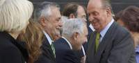
El presidente de la Junta de Andalucía y candidato a la reelección por el PSOE-A, José Antonio Griñán, ha reprochado este lunes al presidente del Gobierno y del PP, Mariano Rajoy, que haya hecho una utilización "electoral" del acto institucional de conmemoración de los 200 años de la Constitución de 1812, conocida como La Pepa, que se ha celebrado esta mañana en Cádiz.
Ante unas 400 personas en un acto público en Olvera (Cádiz), el pueblo del que procede el candidato del PP-A a la Junta, Javier Arenas -que precisamente mañana martes estará aquí-, Griñán ha manifestado que quiere "afear" a Rajoy el hecho de que haya hablado de la citada Constitución y "del cambio", lo que ha supuesto que haya metido una pequeña "bacalá' porque ha hecho, donde no debía, una apuesta electoral, y eso no está bien".
Griñán ha dicho que esa utilización de actos institucionales como si fueran de partido no es nueva en los dirigentes populares, ya que a veces ocurre que la vicepresidenta del Gobierno y ministra de Presidencia, Soraya Sáenz de Santamaría, cuando sale a la rueda de prensa tras los consejos de ministros se "mete con Andalucía" como "si tuviera sus espaldas la gaviota y no el escudo de España".
"Le afeo que confundan actos institucionales con actos de partido", ha indicado Griñán sobre lo ocurrido este lunes en el acto de conmemoración de La Pepa, donde, según ha apuntado, "estábamos todos para hablar de libertad sin hacer de esta patrimonio de nadie", porque la libertad es, ante todo, "una conquista del pueblo" y no de un partido.
"Libertad, igualdad y fraternidad siempre ha movilizado a un pueblo", ha indicado Griñán, quien ha indicado que el pueblo español luchó mucho históricamente para conseguir todo ello, con el viento a sus espaldas" y frente a muchos "reaccionarios y ultramontanos conservadores" que querían impedir el cambio hacia la libertad y la justicia social.
El presidente ha recordado que hace 200 años, en Cádiz, el pueblo español dijo "basta a la tiranía y el despotismo y apostó por la libertad" y por una Constitución que desgraciadamente duró poco porque los reyes "no se resignaban a perder la soberanía y dejársela al pueblo". Pero ese texto, según Griñán, fue, sin duda, una "luz que nos iluminó y marcó un camino".
Asimismo, ha señalado hace 34 años se marcó un camino de libertad y de progreso en España con la Constitución de 1978, que ha sido la que más ha durado porque nunca antes en la historia habíamos tenido más de tres décadas consecutivas de libertad y de progreso.
Seguro de ganar a las encuestas
Griñán se ha mostrado convencido de que los socialistas, como siempre, van a "ganar a las encuestas" y ha expresado que lo único que hay que tener en la cabeza es que "si queremos, podemos", apuntando que el único problema sería ser "indiferente".
El candidato socialista ha manifestado además que él no quiere pedir el voto "contra nadie" ni un cambio contra nadie, sino seguir por el camino seguro que los andaluces llevamos recorriendo desde hace más de 30 años.
Asimismo, ha garantizado que él no va a "mentir ni engañar ni decir que todo está muy bien y que es fácil", como hace el PP, que cuando ha llegado al Gobierno de la Nación, ha hecho todo lo contrario a lo que prometió.
"No quiero mentir y quiero decir lo que hemos hecho, ese camino seguro, lo que estamos haciendo y lo que vamos a hacer", ha indicado el candidato socialista, para quien "lo importante el día 25 no es vencer, sino convencer a todos y todas de que se puede confiar en el PSOE".
"Nada ni nadie impedirá nuestra victoria y vamos como siempre a ganar a las encuestas porque siempre les hemos ganado", según ha recalcado Griñán, para quien lo más importante de todo es meterse en la cabeza que si "queremos, podemos", recordando le lema de la campaña del presidente de Estados Unidos, Barack Obama, "Yes, we can".

2012-03-19T15:48:57Z
Encierros, acampadas y huelgas de hambre: viejas formas de protestar que cobran fuerza
Encierros, acampadas y huelgas de hambre: viejas formas de protestar que cobran fuerza
Nacho Segurado 20m
La abundancia de huelgas y manifestaciones debido a la crisis se ve acompañada por un aumento de otros métodos más drásticos de reclamar derechos.
Juegan con el factor sorpresa y tratan de ganarse la atención de los medios.
'20minutos.es' habla con tres trabajadores que decidieron ir un poco más lejos.
Existe (todavía hoy) un más acá de la ciberprotesta, y es tan antiguo como las ciudades: la ocupación, con fines reivindicativos, del espacio físico urbano. Bulevares, plazas, edificios institucionales, colegios
La persistencia en el tiempo de la crisis económica ha regalado una segunda juventud a las formas tradicionales de protesta, manifestaciones callejeras y huelgas, pero también a otras más recientes, situadas a medio camino entre el heroísmo individual y la barricada colectiva.Frente al activismo concentrado en el tiempo y en el espacio que representan las manifestaciones, las acampadas y los encierros (en los últimos tiempos, gremios esenciales como el de los bomberos o los profesores los han practicado) conjugan la ocupación permanente del espacio público (casi siempre un punto neurálgico de una ciudad) con la visibilidad mediática prolongada en el tiempo.Junto a las formas de protesta colectivas, como las mencionadas en el párrafo anterior, hay otras que son puramente individuales. Sus protagonistas son, por lo general, parados de larga duración, autónomos asfixiados por deudas o trabajadores en situación precaria o recién despedidos. Su objetivo: romper el velo de la indiferencia social, llegar a los medios de comunicación y con ello aspirar a que su situación mejore.Aunque en ocasiones también ocupen el espacio público, es más habitual que estos 'indignados solitarios' opten por acciones llamativas (carreras solidarias, camiones-protesta y desnudos públicos) o decisiones arriesgadas para su integridad física (huelgas de hambre y amenazas de quemarse a lo bonzo). Sus despliegues suelen contar con la aprobación de los ciudadanos, aunque no siempre su valentía y originalidad se ven recompensadas.Así protestan:Leire Sainz-Ezkerra, atención al clienteLeire Sainz-Ezquerra trabaja desde hace 11 años, subcontratada por diferentes empresas, en el servicio de atención al cliente de Iberdrola en Güeñes, una pequeña localidad de Vizcaya que sufre los estragos la deslocalización y el consiguiente aumento del paro (el índice de desempleo en la comarca se sitúa en el 17%, muy por encima de la media del País Vasco, un 11,2%).Leire lleva una semana en huelga de hambre. Su sueldo, 800 euros, apenas le da para ir tirando. "Una huelga tradicional no servía para nada, Iberdrola subcontrataba a otra empresa y cubría nuestros puestos", dice. "Además", recuerda, "los medios de comunicación nunca nos hicieron caso cuando nos poníamos en huelga o nos manifestábamos"."Desconcentrada y muy cansada", Leire no pierde la esperanza en que con esta huelga de hambre, que lleva a cabo junto a otra compañera, sus problemas cobren protagonismo público: desde diciembre de 2010, 70 empleados, la mayoría mujeres, han sido despedidos de sus puestos; y, desde marzo, en aplicación de la nueva reforma laboral, otros 11 fueron despedidos por estar de baja por enfermedad (justificada).Leire habla con cautela del futuro, aunque puntualiza que su huelga de hambre es indefinida. De momento, nadie de Iberdrola ni de la compañía para la que trabaja directamente (Konecta BTO), se ha puesto en contacto con ella. "Los medios, al menos, ya se están haciendo eco de la noticia", dice, "es un paso, esperemos que no sea el último".Carlos Marcos, bomberoCarlos Marcos fue uno de los bomberos que acampó aquel 15 de mayo del año pasado -el mismo día, puntualiza, que los jóvenes del 15M- en el paseo del Prado de Madrid. "Fue una acción desesperada", recuerda, "se habían agotado todas las vías reivindicativas, necesitamos dar un golpe de efecto".Los bomberos de Madrid estaban en conflicto con el Ayuntamiento de la capital. Acusaban al consistorio de trabajar con unos medios precarios y con unas plantillas exhaustas y mermadas. Era un conflicto largo y encallado en el que ninguna de las partes lograba alcanzar un consenso mínimo, y del que todavía no se vislumbra un final."Buscábamos un acto llamativo", dice Marcos, "y tras una serie de huelgas, decidimos plantar el campamento". La acampada duró 15 días y los bomberos que tomaron parte en ella recibieron acusaciones de todo tipo, desde que daban mala publicidad a la ciudad hasta insultos de gandules y vagos."A corto plazo, sinceramente, no solucionó nada", reflexiona Marcos, "pero puede que a medio o largo, sí". Sobre el regusto de aquellas jornadas, Marcos es tajante: "Fue algo agradable, nos dejó buen sabor de boca, repetiríamos".Marisa Aguirre, profesoraEl instituto de Educación Secundaria (IES) Juan de la Cierva, en Madrid, fue uno de los primeros centros educativos de España que realizó un encierro en protesta por la situación de la educación pública (en general) y las medidas tomadas por el Gobierno de Esperanza Aguirre (en particular), que han supuesto este año un recorte drástico de los profesores interinos, un aumento de horas lectivas para los docentes y la merma de las actividades de formación complementarias (salidas fuera de los centros, tutorías, etc.).Marisa Aguirre, profesora en este instituto y una de las protagonistas de aquel primer encierro, lo recuerda así: "Tuvimos una repercusión mediática tremenda; queríamos dar a conocer nuestro problema, y no encontramos un método mejor".Las otras opciones eran las huelgas (hasta 9) y las manifestaciones frente a la Consejería de Educación de la capital. Estas jornadas de lucha recibieron el nombre de 'marea verde'. Pero el Juan de la Cierva, como otros muchos institutos, asumió que manifestarse no era suficiente. De ahí nacieron las 'noches verdes': docentes y alumnos, codo con codo, "luchando por la educación". Y, "aunque de momento" los encierros han cesado, la lucha continúa.Otras formas sui géneris de protesta:Jorge Linares, camioneroSin trabajo y sin financiación, pero con un camión, gasolina y esperaza. Así se lanzó Jorge Linares a dar vueltas y más vueltas alrededor del Congreso de los Diputados. Su fin era "que la gente viera que todos podemos hacer cosas para arreglar la situación económica". Cuando se le acabó la gasolina, paró de dar vueltas.Doney Ramírez, trabajadorTras 9 meses subido a una grúa de Pozuelo de Alarcón (Madrid), Doney Ramírez decidió concluir su peculiar forma de protestar por un impago de 150.000 euros sin haber logrado su objetivo. Meses de "tortura" y "soledad" que, lejos de representar un triunfo, quedaron como un "mal recuerdo".
Lennart Cromstedt, tripulante de cabina
Debido al brusco cierre de Spanair, el futuro profesional de Lennart Cromstedt, de 43 años y tripulante de cabina, estaba en el aire. Para denunciar su situación, no se le ocurrió mejor forma que correr de Barcelona a Madrid. A su favor, su resistencia física y el apoyo de sus compañeros. Consiguió su objetivo: "Hacerse oír".
Nacho Segurado 20m
- La abundancia de huelgas y manifestaciones debido a la crisis se ve acompañada por un aumento de otros métodos más drásticos de reclamar derechos.
- Juegan con el factor sorpresa y tratan de ganarse la atención de los medios.
- '20minutos.es' habla con tres trabajadores que decidieron ir un poco más lejos.
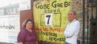
Existe (todavía hoy) un más acá de la ciberprotesta, y es tan antiguo como las ciudades: la ocupación, con fines reivindicativos, del espacio físico urbano. Bulevares, plazas, edificios institucionales, colegios
La persistencia en el tiempo de la crisis económica ha regalado una segunda juventud a las formas tradicionales de protesta, manifestaciones callejeras y huelgas, pero también a otras más recientes, situadas a medio camino entre el heroísmo individual y la barricada colectiva.
Frente al activismo concentrado en el tiempo y en el espacio que representan las manifestaciones, las acampadas y los encierros (en los últimos tiempos, gremios esenciales como el de los bomberos o los profesores los han practicado) conjugan la ocupación permanente del espacio público (casi siempre un punto neurálgico de una ciudad) con la visibilidad mediática prolongada en el tiempo.
Junto a las formas de protesta colectivas, como las mencionadas en el párrafo anterior, hay otras que son puramente individuales. Sus protagonistas son, por lo general, parados de larga duración, autónomos asfixiados por deudas o trabajadores en situación precaria o recién despedidos. Su objetivo: romper el velo de la indiferencia social, llegar a los medios de comunicación y con ello aspirar a que su situación mejore.
Aunque en ocasiones también ocupen el espacio público, es más habitual que estos 'indignados solitarios' opten por acciones llamativas (carreras solidarias, camiones-protesta y desnudos públicos) o decisiones arriesgadas para su integridad física (huelgas de hambre y amenazas de quemarse a lo bonzo). Sus despliegues suelen contar con la aprobación de los ciudadanos, aunque no siempre su valentía y originalidad se ven recompensadas.
Así protestan:
- Leire Sainz-Ezkerra, atención al cliente
Leire Sainz-Ezquerra trabaja desde hace 11 años, subcontratada por diferentes empresas, en el servicio de atención al cliente de Iberdrola en Güeñes, una pequeña localidad de Vizcaya que sufre los estragos la deslocalización y el consiguiente aumento del paro (el índice de desempleo en la comarca se sitúa en el 17%, muy por encima de la media del País Vasco, un 11,2%).
Leire lleva una semana en huelga de hambre. Su sueldo, 800 euros, apenas le da para ir tirando. "Una huelga tradicional no servía para nada, Iberdrola subcontrataba a otra empresa y cubría nuestros puestos", dice. "Además", recuerda, "los medios de comunicación nunca nos hicieron caso cuando nos poníamos en huelga o nos manifestábamos".
"Desconcentrada y muy cansada", Leire no pierde la esperanza en que con esta huelga de hambre, que lleva a cabo junto a otra compañera, sus problemas cobren protagonismo público: desde diciembre de 2010, 70 empleados, la mayoría mujeres, han sido despedidos de sus puestos; y, desde marzo, en aplicación de la nueva reforma laboral, otros 11 fueron despedidos por estar de baja por enfermedad (justificada).
Leire habla con cautela del futuro, aunque puntualiza que su huelga de hambre es indefinida. De momento, nadie de Iberdrola ni de la compañía para la que trabaja directamente (Konecta BTO), se ha puesto en contacto con ella. "Los medios, al menos, ya se están haciendo eco de la noticia", dice, "es un paso, esperemos que no sea el último".
Carlos Marcos fue uno de los bomberos que acampó aquel 15 de mayo del año pasado -el mismo día, puntualiza, que los jóvenes del 15M- en el paseo del Prado de Madrid. "Fue una acción desesperada", recuerda, "se habían agotado todas las vías reivindicativas, necesitamos dar un golpe de efecto".
Los bomberos de Madrid estaban en conflicto con el Ayuntamiento de la capital. Acusaban al consistorio de trabajar con unos medios precarios y con unas plantillas exhaustas y mermadas. Era un conflicto largo y encallado en el que ninguna de las partes lograba alcanzar un consenso mínimo, y del que todavía no se vislumbra un final.
"Buscábamos un acto llamativo", dice Marcos, "y tras una serie de huelgas, decidimos plantar el campamento". La acampada duró 15 días y los bomberos que tomaron parte en ella recibieron acusaciones de todo tipo, desde que daban mala publicidad a la ciudad hasta insultos de gandules y vagos.
"A corto plazo, sinceramente, no solucionó nada", reflexiona Marcos, "pero puede que a medio o largo, sí". Sobre el regusto de aquellas jornadas, Marcos es tajante: "Fue algo agradable, nos dejó buen sabor de boca, repetiríamos".
- Marisa Aguirre, profesora
El instituto de Educación Secundaria (IES) Juan de la Cierva, en Madrid, fue uno de los primeros centros educativos de España que realizó un encierro en protesta por la situación de la educación pública (en general) y las medidas tomadas por el Gobierno de Esperanza Aguirre (en particular), que han supuesto este año un recorte drástico de los profesores interinos, un aumento de horas lectivas para los docentes y la merma de las actividades de formación complementarias (salidas fuera de los centros, tutorías, etc.).
Marisa Aguirre, profesora en este instituto y una de las protagonistas de aquel primer encierro, lo recuerda así: "Tuvimos una repercusión mediática tremenda; queríamos dar a conocer nuestro problema, y no encontramos un método mejor".
Las otras opciones eran las huelgas (hasta 9) y las manifestaciones frente a la Consejería de Educación de la capital. Estas jornadas de lucha recibieron el nombre de 'marea verde'. Pero el Juan de la Cierva, como otros muchos institutos, asumió que manifestarse no era suficiente. De ahí nacieron las 'noches verdes': docentes y alumnos, codo con codo, "luchando por la educación". Y, "aunque de momento" los encierros han cesado, la lucha continúa.
Otras formas sui géneris de protesta:
Sin trabajo y sin financiación, pero con un camión, gasolina y esperaza. Así se lanzó Jorge Linares a dar vueltas y más vueltas alrededor del Congreso de los Diputados. Su fin era "que la gente viera que todos podemos hacer cosas para arreglar la situación económica". Cuando se le acabó la gasolina, paró de dar vueltas.
- Doney Ramírez, trabajador
Tras 9 meses subido a una grúa de Pozuelo de Alarcón (Madrid), Doney Ramírez decidió concluir su peculiar forma de protestar por un impago de 150.000 euros sin haber logrado su objetivo. Meses de "tortura" y "soledad" que, lejos de representar un triunfo, quedaron como un "mal recuerdo".
-
Lennart Cromstedt, tripulante de cabina
Debido al brusco cierre de Spanair, el futuro profesional de Lennart Cromstedt, de 43 años y tripulante de cabina, estaba en el aire. Para denunciar su situación, no se le ocurrió mejor forma que correr de Barcelona a Madrid. A su favor, su resistencia física y el apoyo de sus compañeros. Consiguió su objetivo: "Hacerse oír".
2012-03-19T13:48:08Z
Rajoy aprovecha el bicentenario de 'La Pepa' para defender "las reformas en tiempos de crisis"
Rajoy aprovecha el bicentenario de 'La Pepa' para defender "las reformas en tiempos de crisis"
EFE
"Cuando la pesadumbre atenaza la vida de la nación, los españoles siempre hemos sabido reaccionar con admirable fortaleza y determinación", ha afirmado.
También ha destacado que la monarquía constitucional está "más viva que nunca".
El rey hace un llamamiento a la "responsabilidad política" para salir de la crisis.
Los reyes y el Gobierno celebran en Cádiz el Bicentenario de 'La Pepa'.
El presidente del Gobierno, Mariano Rajoy, ha subrayado este lunes que el ejemplo de la Constitución de Cádiz enseña que "en tiempos de crisis, no hay que tener miedo a hacer reformas", sino "la valentía" de llevarlas a cabo, en favor del bienestar de los ciudadanos, frente al "inmovilismo y la resignación".Ante las más de 300 personalidades asistentes a la ceremonia conmemorativa del bicentenario de aquella Carta Magna, entre ellos las máximas autoridades de los tres poderes del Estado, Rajoy ha afirmado que, gracias a la decisión de los constitucionalistas de 1812, "la reforma trajo el cambio" y "este lunes como entonces, el cambio es la reforma". "Precisamente en momentos como los actuales para la nación", cuando "el presente se vive con inquietud por millones de españoles, más que nunca el Gobierno y todas las instituciones del Estado estamos llamados a redoblar los esfuerzos para crear condiciones" que permitan que "el bienestar llegue a todos los ciudadanos", ha proclamado el jefe del Ejecutivo."Cuando la pesadumbre atenaza la vida de la nación, los españoles siempre hemos sabido reaccionar con admirable fortaleza y determinación, apartando nuestras diferencias", ha señalado Rajoy en sus palabras de homenaje a la Constitución de 1812, que ha definido como "una de las grandes aportaciones españolas a la historia de la libertad".Al rendir tributo a la Pepa, también ha destacado la vigencia de la monarquía constitucional, "este lunes más viva que nunca", y del "sentido de pertenencia a la nación basado en el patriotismo liberal, la virtud cívica y la unidad nacional", unos sentimientos que ha animado a asumir "sin complejo alguno".Asimismo, ha defendido el pensamiento que recibió entonces el nombre de "liberal", que dio lugar a un "movimiento político de ahora en adelante europeo y universal", que supone "una exigencia universal" y es "el mejor fundamento de la democracia, la tolerancia y la pluralidad".La celebración del bicentenario debe servir asimismo para "actualizar virtudes como el patriotismo", a juicio de Rajoy, quien ha advertido además sobre la importancia de que la Cumbre Iberoamericana de Cádiz garantice "conclusiones operativas y compromisos verificables, para seguir manteniendo la vigencia y pujanza del imprescindible eje atlántico".Previamente, ha tomado la palabra el presidente del Congreso, Jesús Posada, quien ha destacado que la Pepa certificó "la caída del antiguo régimen" y el inicio de un camino "hacia el Estado de Derecho" basado en el "respeto a los derechos fundamentales de las personas".Fue también una constitución que, en una España en plena guerra de la Independencia contra las tropas napoleónicas, simbolizó "la voluntad de afirmar y defender nuestra identidad nacional" e introdujo al país "por la senda de la modernidad y la libertad", creando un marco de convivencia para todos los españoles "sin privilegios ni exenciones".Tras invitar a "redescubrir y reafirmar nuestro compromiso" con aquel espíritu, Posada ha señalado que este bicentenario es para él una ocasión para hacer un homenaje a la monarquía española y a la corona que "ha ofrecido a todos los españoles" la posibilidad de tener "una referencia más allá de las diferencias políticas" y, en este sentido, ha agradecido a don Juan Carlos y doña Sofía su "dedicación y entrega al servicio de España"."El mejor homenaje"También ha tomado la palabra el presidente del Senado, Pío García Escudero, quien ha señalado que "el mejor homenaje" que se le puede hacer doscientos años después a aquella primera carta magna es tomar como "ejemplo y estímulo" el "coraje" y la "gallardía" de aquellos diputados y "renovar nuestro compromiso" con los valores "que ellos defendieron".García Escudero ha afirmado que aquella primera carta magna "será siempre" un "mito" de "dimensión universal" y ha apuntado que los españoles de este lunes "tenemos la obligación de ser los primeros guardianes de la libertad" y de conservar el legado de aquella Constitución con la que "la nación española se proclamaba dueña exclusiva de su destino".El presidente del Senado ha recordado también que los pilares de la Constitución de 1978 están en la de 1812, una carta que tuvo un camino "tortuoso" y "jalonado de pasos en falso" pero cuyos frutos han quedado.
EFE
- "Cuando la pesadumbre atenaza la vida de la nación, los españoles siempre hemos sabido reaccionar con admirable fortaleza y determinación", ha afirmado.
- También ha destacado que la monarquía constitucional está "más viva que nunca".
- El rey hace un llamamiento a la "responsabilidad política" para salir de la crisis.
- Los reyes y el Gobierno celebran en Cádiz el Bicentenario de 'La Pepa'.
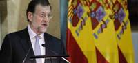
El presidente del Gobierno, Mariano Rajoy, ha subrayado este lunes que el ejemplo de la Constitución de Cádiz enseña que "en tiempos de crisis, no hay que tener miedo a hacer reformas", sino "la valentía" de llevarlas a cabo, en favor del bienestar de los ciudadanos, frente al "inmovilismo y la resignación".
Ante las más de 300 personalidades asistentes a la ceremonia conmemorativa del bicentenario de aquella Carta Magna, entre ellos las máximas autoridades de los tres poderes del Estado, Rajoy ha afirmado que, gracias a la decisión de los constitucionalistas de 1812, "la reforma trajo el cambio" y "este lunes como entonces, el cambio es la reforma".
"Precisamente en momentos como los actuales para la nación", cuando "el presente se vive con inquietud por millones de españoles, más que nunca el Gobierno y todas las instituciones del Estado estamos llamados a redoblar los esfuerzos para crear condiciones" que permitan que "el bienestar llegue a todos los ciudadanos", ha proclamado el jefe del Ejecutivo.
"Cuando la pesadumbre atenaza la vida de la nación, los españoles siempre hemos sabido reaccionar con admirable fortaleza y determinación, apartando nuestras diferencias", ha señalado Rajoy en sus palabras de homenaje a la Constitución de 1812, que ha definido como "una de las grandes aportaciones españolas a la historia de la libertad".
Al rendir tributo a la Pepa, también ha destacado la vigencia de la monarquía constitucional, "este lunes más viva que nunca", y del "sentido de pertenencia a la nación basado en el patriotismo liberal, la virtud cívica y la unidad nacional", unos sentimientos que ha animado a asumir "sin complejo alguno".
Asimismo, ha defendido el pensamiento que recibió entonces el nombre de "liberal", que dio lugar a un "movimiento político de ahora en adelante europeo y universal", que supone "una exigencia universal" y es "el mejor fundamento de la democracia, la tolerancia y la pluralidad".
La celebración del bicentenario debe servir asimismo para "actualizar virtudes como el patriotismo", a juicio de Rajoy, quien ha advertido además sobre la importancia de que la Cumbre Iberoamericana de Cádiz garantice "conclusiones operativas y compromisos verificables, para seguir manteniendo la vigencia y pujanza del imprescindible eje atlántico".
Previamente, ha tomado la palabra el presidente del Congreso, Jesús Posada, quien ha destacado que la Pepa certificó "la caída del antiguo régimen" y el inicio de un camino "hacia el Estado de Derecho" basado en el "respeto a los derechos fundamentales de las personas".
Fue también una constitución que, en una España en plena guerra de la Independencia contra las tropas napoleónicas, simbolizó "la voluntad de afirmar y defender nuestra identidad nacional" e introdujo al país "por la senda de la modernidad y la libertad", creando un marco de convivencia para todos los españoles "sin privilegios ni exenciones".
Tras invitar a "redescubrir y reafirmar nuestro compromiso" con aquel espíritu, Posada ha señalado que este bicentenario es para él una ocasión para hacer un homenaje a la monarquía española y a la corona que "ha ofrecido a todos los españoles" la posibilidad de tener "una referencia más allá de las diferencias políticas" y, en este sentido, ha agradecido a don Juan Carlos y doña Sofía su "dedicación y entrega al servicio de España".
"El mejor homenaje"
También ha tomado la palabra el presidente del Senado, Pío García Escudero, quien ha señalado que "el mejor homenaje" que se le puede hacer doscientos años después a aquella primera carta magna es tomar como "ejemplo y estímulo" el "coraje" y la "gallardía" de aquellos diputados y "renovar nuestro compromiso" con los valores "que ellos defendieron".
García Escudero ha afirmado que aquella primera carta magna "será siempre" un "mito" de "dimensión universal" y ha apuntado que los españoles de este lunes "tenemos la obligación de ser los primeros guardianes de la libertad" y de conservar el legado de aquella Constitución con la que "la nación española se proclamaba dueña exclusiva de su destino".
El presidente del Senado ha recordado también que los pilares de la Constitución de 1978 están en la de 1812, una carta que tuvo un camino "tortuoso" y "jalonado de pasos en falso" pero cuyos frutos han quedado.
2012-03-19T12:25:06Z
El padre de Rajoy, ingresado en La Paz por un ictus
El padre de Rajoy, ingresado en La Paz por un ictus
20MINUTOS.ES
Así lo han confirmado fuentes del hospital a '20minutos.es'.
Mariano Rajoy Sobredo tiene 90 años y el pasado mes de julio había sido operado por una fractura de cadera.
Por ahora se desconoce si Rajoy modificará su agenda para estar junto a su padre.
Fue la primera persona a la que el actual presidente del Gobierno llamó tras conocerse su victoria en las elecciones generales del 20-N.
El padre del presidente del Gobierno, Mariano Rajoy, ha sido ingresado este lunes por la mañana en el Hospital La Paz de Madrid a consecuencia de un ictus, según han confirmado fuentes del hospital a 20minutos.es.Por ahora se desconoce si Rajoy, que se encuentra en Cádiz con motivo de los actos del 200º aniversario de La Pepa, cambiará su agenda para estar junto a su padre en Madrid. Mariano Rajoy Sobredo, de 90 años, fue presidente de la Audiencia Provincial de Pontevedra durante años. Aunque su imagen es poco conocida a nivel nacional, su carrera de jurista era conocida en Pontevedra.El presidente del Gobierno está muy unido a su padre. Fue a quien primero llamó tras conocerse que sería el nuevo presidente del Gobierno, y a él dedicó unas palabras en su libro de memorias En Confianza, publicado a finales del año pasado: "Mi padre, por quien tengo una devoción especial y ha sido un ejemplo permanente en mi vida, ejercía de juez, y de él heredé un sentido muy marcado por el respeto a las reglas, el sentido de la justicia y el esfuerzo".El apego era tal que hasta que Rajoy se censó en Madrid, acudían juntos a votar en las elecciones. Sin embargo, en los pasados comicios generales del 20-N, Rajoy Sobredo acudió solo a votar. Entonces dijo escuetamente que se "encontraba bien", a pesar de haber sufrido una operación por una fractura de cadera el pasado mes de julio.
20MINUTOS.ES
- Así lo han confirmado fuentes del hospital a '20minutos.es'.
- Mariano Rajoy Sobredo tiene 90 años y el pasado mes de julio había sido operado por una fractura de cadera.
- Por ahora se desconoce si Rajoy modificará su agenda para estar junto a su padre.
- Fue la primera persona a la que el actual presidente del Gobierno llamó tras conocerse su victoria en las elecciones generales del 20-N.
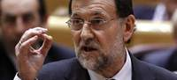
El padre del presidente del Gobierno, Mariano Rajoy, ha sido ingresado este lunes por la mañana en el Hospital La Paz de Madrid a consecuencia de un ictus, según han confirmado fuentes del hospital a 20minutos.es.
Por ahora se desconoce si Rajoy, que se encuentra en Cádiz con motivo de los actos del 200º aniversario de La Pepa, cambiará su agenda para estar junto a su padre en Madrid.
Mariano Rajoy Sobredo, de 90 años, fue presidente de la Audiencia Provincial de Pontevedra durante años. Aunque su imagen es poco conocida a nivel nacional, su carrera de jurista era conocida en Pontevedra.
El presidente del Gobierno está muy unido a su padre. Fue a quien primero llamó tras conocerse que sería el nuevo presidente del Gobierno, y a él dedicó unas palabras en su libro de memorias En Confianza, publicado a finales del año pasado: "Mi padre, por quien tengo una devoción especial y ha sido un ejemplo permanente en mi vida, ejercía de juez, y de él heredé un sentido muy marcado por el respeto a las reglas, el sentido de la justicia y el esfuerzo".
El apego era tal que hasta que Rajoy se censó en Madrid, acudían juntos a votar en las elecciones. Sin embargo, en los pasados comicios generales del 20-N, Rajoy Sobredo acudió solo a votar. Entonces dijo escuetamente que se "encontraba bien", a pesar de haber sufrido una operación por una fractura de cadera el pasado mes de julio.
2012-03-19T10:17:31Z
Rajoy elige el artículo sobre el derecho a arbitraje como su favorito de 'La Pepa'
Rajoy elige el artículo sobre el derecho a arbitraje como su favorito de 'La Pepa'
EFE
El presidente ha escogido el el artículo 280 de la Constitución de 1812.
Así lo ha asegurado desde su cuenta personal de la red social Twitter.
Este lunes se celebra el bicentenario de esta Carta Magna.
Los Reyes y el Gobierno celebran en Cádiz el Bicentenario de La Pepa.
El rey anima a Iberoamérica a avanzar hacia la igualdad.
La Pepa: ¿una Constitución para la felicidad de todos?
El presidente del Gobierno, Mariano Rajoy, ha elegido el artículo 280 de la Constitución de 1812 que establece el derecho a arbitraje como su favorito del texto conocido popularmente como La Pepa.Rajoy ha señalado este artículo en su cuenta personal de Twitter, dentro de la iniciativa de Acción Cultural Española "Un tuit por la Pepa" con motivo del bicentenario de esta Carta Magna.El presidente del Gobierno ha sido el encargado de iniciar esta acción en la red de los 140 caracteres, en la que también participarán personalidades del mundo de la política, la cultura, el periodismo y las nuevas tecnologías. Rajoy ha escogido el artículo 280, que dice literalmente: "No se podrá privar a ningún español del derecho de terminar sus diferencias por medios de jueces árbitros elegidos por ambas partes".Forma parte del capítulo segundo, sobre la administración de Justicia en lo civil, que se incluyó en el título quinto, que engloba lo relacionado con los tribunales y la administración de Justicia en lo civil y en lo criminal. El presiente del Gobierno participa este lunes en Cádiz en los actos para conmemorar el bicentenario de la Constitución de 1812, que estarán presididos por los reyes."Con @ACEcultura y #lapepa. Mi artículo favorito: http://ow.ly/i/vQSn Mañana tuitea @Sorayapp", ha escrito en su cuenta Rajoy. En el enlace, se puede ver una imagen con el citado artículo de la Constitución de 1812.Participarán también en esta iniciativa la vicepresidenta, ministra de Presidencia y portavoz del Gobierno, Soraya Sáenz de Santamaría, el ministro de Educación, Cultura y Deporte, José Ignacio Wert, y el secretario general del PSOE, Alfredo Pérez Rubalcaba, entre otras personalidades. Cada día se publicará un tuit con el artículo favorito y se anunciará en este mensaje el encargado de hacerlo al día siguiente.
EFE
- El presidente ha escogido el el artículo 280 de la Constitución de 1812.
- Así lo ha asegurado desde su cuenta personal de la red social Twitter.
- Este lunes se celebra el bicentenario de esta Carta Magna.
- Los Reyes y el Gobierno celebran en Cádiz el Bicentenario de La Pepa.
- El rey anima a Iberoamérica a avanzar hacia la igualdad.
- La Pepa: ¿una Constitución para la felicidad de todos?
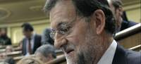
El presidente del Gobierno, Mariano Rajoy, ha elegido el artículo 280 de la Constitución de 1812 que establece el derecho a arbitraje como su favorito del texto conocido popularmente como La Pepa.
Rajoy ha señalado este artículo en su cuenta personal de Twitter, dentro de la iniciativa de Acción Cultural Española "Un tuit por la Pepa" con motivo del bicentenario de esta Carta Magna.
El presidente del Gobierno ha sido el encargado de iniciar esta acción en la red de los 140 caracteres, en la que también participarán personalidades del mundo de la política, la cultura, el periodismo y las nuevas tecnologías. Rajoy ha escogido el artículo 280, que dice literalmente: "No se podrá privar a ningún español del derecho de terminar sus diferencias por medios de jueces árbitros elegidos por ambas partes".
Forma parte del capítulo segundo, sobre la administración de Justicia en lo civil, que se incluyó en el título quinto, que engloba lo relacionado con los tribunales y la administración de Justicia en lo civil y en lo criminal. El presiente del Gobierno participa este lunes en Cádiz en los actos para conmemorar el bicentenario de la Constitución de 1812, que estarán presididos por los reyes.
"Con @ACEcultura y #lapepa. Mi artículo favorito: http://ow.ly/i/vQSn Mañana tuitea @Sorayapp", ha escrito en su cuenta Rajoy. En el enlace, se puede ver una imagen con el citado artículo de la Constitución de 1812.
Participarán también en esta iniciativa la vicepresidenta, ministra de Presidencia y portavoz del Gobierno, Soraya Sáenz de Santamaría, el ministro de Educación, Cultura y Deporte, José Ignacio Wert, y el secretario general del PSOE, Alfredo Pérez Rubalcaba, entre otras personalidades. Cada día se publicará un tuit con el artículo favorito y se anunciará en este mensaje el encargado de hacerlo al día siguiente.
2012-03-19T09:31:56Z
Desarticulan dos grupos que explotaban a mujeres rumanas y las obligaban a casarse
Desarticulan dos grupos que explotaban a mujeres rumanas y las obligaban a casarse
EFE
El primero captaba a mujeres en Rumanía, las trasladaba a España, les privaba de documentación y las obligaba a ejercer la prostitución.
El segundo falsificaba documentos para matrimonios fraudulentos.
Hay once detenidos, entre ellas el máximo responsable de la red y el especialista más cualificado en tareas de falsificación.
Agentes de la Policía Nacional han desarticulado dos grupos que colaboraban para explotar sexualmente a mujeres y después "casarlas" a conveniencia. El primero captaba a jóvenes en Rumanía, las trasladaba a España, les privaba de documentación y las obligaba a ejercer la prostitución hasta que saldaban la "deuda contraída". A su vez el segundo falsificaba todo tipo de documentos para tramitar matrimonios fraudulentos entre las explotadas y ciudadanos extracomunitarios.Operaban en las provincias de Málaga, Granada, Murcia y Valencia y tenían ramificaciones en Alemania y Portugal.La investigación comenzó el pasado mes de enero de 2011 cuando se tuvo conocimiento de un entramado criminal formado por dos grupos organizados. Uno de ellos estaba compuesto por ciudadanos rumanos y dedicado principalmente a la trata de seres humanos con fines de explotación sexual, en concreto mujeres de su misma nacionalidad. Este primer grupo también estaba íntimamente relacionado con otro, compuesto por ciudadanos rumanos y nigerianos que acordaban matrimonios de conveniencia entre ciudadanos comunitarios y no comunitarios para obtener el permiso de residencia de la Unión Europea. Para ello falsificaban todo tipo de documentos y trasladaban a los ciudadanos no comunitarios (normalmente nigerianos) a España mediante cartas de invitación.El nexo de unión entre los dos grupos eran las víctimas, mujeres rumanas que eran explotadas en la prostitución y, a la vez, utilizadas para celebrar matrimonios de conveniencia con ciudadanos nigerianos para solicitar el permiso de residencia comunitario. Una vez traficadas a nuestro país, sus captores retenían su documentación hasta que pagaban su deuda a través del ejercicio de la prostitución. La organización también utilizaba a las víctimas para falsificar documentos utilizando sus datos originales de filiación, suplantando fotografías o simplemente haciéndose pasar por ellas a la hora de presentar o recoger estos documentos en los juzgados e iglesias de la provincia de Málaga. Los investigadores localizaron el laboratorio donde se realizaban las tareas de falsificación e identificaron a los responsables de las mismas.Las investigaciones han concluido con la detención de once personas, entre ellas el máximo responsable de la red y el especialista encargado de fabricar las copias de documentos oficiales. En los registros domiciliarios efectuados, en las localidades de La Herradura (Granada) y Benalmádena (Málaga), los agentes se han incautado de maquinaria especializada para falsificar todo tipo de documentos y moneda. Asimismo, los investigadores hallaron 3.770 euros en billetes falsos, 178 billetes de cinco euros y 144 billetes de 20 euros. Es la primera vez que se detectan billetes falsos de cinco euros en nuestro país.
EFE
- El primero captaba a mujeres en Rumanía, las trasladaba a España, les privaba de documentación y las obligaba a ejercer la prostitución.
- El segundo falsificaba documentos para matrimonios fraudulentos.
- Hay once detenidos, entre ellas el máximo responsable de la red y el especialista más cualificado en tareas de falsificación.
Agentes de la Policía Nacional han desarticulado dos grupos que colaboraban para explotar sexualmente a mujeres y después "casarlas" a conveniencia. El primero captaba a jóvenes en Rumanía, las trasladaba a España, les privaba de documentación y las obligaba a ejercer la prostitución hasta que saldaban la "deuda contraída". A su vez el segundo falsificaba todo tipo de documentos para tramitar matrimonios fraudulentos entre las explotadas y ciudadanos extracomunitarios.
Operaban en las provincias de Málaga, Granada, Murcia y Valencia y tenían ramificaciones en Alemania y Portugal.
La investigación comenzó el pasado mes de enero de 2011 cuando se tuvo conocimiento de un entramado criminal formado por dos grupos organizados. Uno de ellos estaba compuesto por ciudadanos rumanos y dedicado principalmente a la trata de seres humanos con fines de explotación sexual, en concreto mujeres de su misma nacionalidad. Este primer grupo también estaba íntimamente relacionado con otro, compuesto por ciudadanos rumanos y nigerianos que acordaban matrimonios de conveniencia entre ciudadanos comunitarios y no comunitarios para obtener el permiso de residencia de la Unión Europea. Para ello falsificaban todo tipo de documentos y trasladaban a los ciudadanos no comunitarios (normalmente nigerianos) a España mediante cartas de invitación.
El nexo de unión entre los dos grupos eran las víctimas, mujeres rumanas que eran explotadas en la prostitución y, a la vez, utilizadas para celebrar matrimonios de conveniencia con ciudadanos nigerianos para solicitar el permiso de residencia comunitario. Una vez traficadas a nuestro país, sus captores retenían su documentación hasta que pagaban su deuda a través del ejercicio de la prostitución.
La organización también utilizaba a las víctimas para falsificar documentos utilizando sus datos originales de filiación, suplantando fotografías o simplemente haciéndose pasar por ellas a la hora de presentar o recoger estos documentos en los juzgados e iglesias de la provincia de Málaga. Los investigadores localizaron el laboratorio donde se realizaban las tareas de falsificación e identificaron a los responsables de las mismas.
Las investigaciones han concluido con la detención de once personas, entre ellas el máximo responsable de la red y el especialista encargado de fabricar las copias de documentos oficiales. En los registros domiciliarios efectuados, en las localidades de La Herradura (Granada) y Benalmádena (Málaga), los agentes se han incautado de maquinaria especializada para falsificar todo tipo de documentos y moneda. Asimismo, los investigadores hallaron 3.770 euros en billetes falsos, 178 billetes de cinco euros y 144 billetes de 20 euros. Es la primera vez que se detectan billetes falsos de cinco euros en nuestro país.
2012-03-19T05:53:00Z
Los Reyes y el Gobierno en pleno celebran en Cádiz el Bicentenario de 'La Pepa'
Los Reyes y el Gobierno en pleno celebran en Cádiz el Bicentenario de 'La Pepa'
EFE
Los actos se llevan a cabo en el Oratorio de San Felipe Neri.
Es el lugar donde se promulgó la primera Constitución.
El rey anima a Iberoamérica a avanzar hacia la igualdad.
La Pepa: ¿una Constitución para la felicidad de todos?
Los Reyes y el Gobierno en pleno celebran este lunes a Cádiz un acto institucional en homenaje del Bicentenario de la promulgación de la Constitución de 1812, la primera que estableció en nuestro país la soberanía popular, la división de poderes, la libertad de expresión y de imprenta, convirtiéndose así en una de las más liberales de su tiempo.Los máximos representantes del poder legislativo y judicial también han acudido al acto en el Oratorio de San Felipe Neri, lugar donde se promulgó hace 200 años 'La Pepa', llamada así porque vio la luz el día de San José.En el interior del Oratorio se han sucedido los discursos, por este orden, de los presidentes del Senado, Pío García-Escudero; Congreso, Jesús Posada; el jefe del Ejecutivo, Mariano Rajoy, y finalmente el Rey.Tras los discursos, los Reyes, acompañados por el resto de autoridades, realizarán una ofrenda ante el monumento a las Cortes de Cádiz de 1812 en la Plaza de España, donde sonará el himno nacional.Para el acto en el Oratori se han cursado unas 300 invitaciones, que incluyen a los presidentes del Supremo y el Consejo General del Poder Judicial, Carlos Dívar; del Constitucional, Pascual Sala; de la Junta de Andalucía, José Antonio Griñán, así como a los miembros de las respectivas Mesas del Congreso y Senado y a los portavoces parlamentarios.También se ha invitado al acto a todos los embajadores iberoamericanos, de Portugal y Filipinas. La Cumbre Iberoamericana se celebrará este año en Cádiz en noviembre coincidiendo precisamente con el bicentenario de la Constitución de 1812, que influyó en la redacción de varias constituciones europeas y repercutió en los fundamentos constitucionales de la mayoría de los estados americanos tras su independencia.Con este acto institucional, se conmemora el nacimiento de las libertades y los derechos civiles en nuestro país, del concepto de ciudadano y de la España Moderna.Se trata pues de "hacer memoria histórica" y celebrar un acontecimiento que ha convertido a España en "una de las democracias más fuertes del mundo", explica el Consorcio establecido para la organización de los actos de conmemoración y que integran miembros del Gobierno, de la Junta de Andalucía y de la Diputación y el Ayuntamiento de Cádiz.Iniciativa en TwitterRajoy también ha elegido este lunes su artículo preferido de la Constitución de 1812 y lo ha difundido desde su cuenta personal en Twitter, dando así el pistoletazo de salida a una iniciativa puesta en marcha por Acción Cultural Española para divulgar a través de las redes sociales Twitter y Facebook el contenido de la primera Carta Magna promulgada en nuestro país, una de las más liberales de su tiempo.Para ello, Acción Cultural Española ha pedido a políticos, académicos, periodistas y personalidades del mundo de la cultura que envíen también, desde sus cuentas de Twitter su artículo preferido de la Constitución de 1812.Entre otros, participarán en esta iniciativa la vicepresidenta del Gobierno, Soraya Sáenz de Santamaría, el ministro de Cultura y Educación, José Ignacio Wert; la alcaldesa de Cádiz, Teófila Martínez, el secretario general del PSOE, Alfredo Pérez Rubalcaba, los directores de varios periódicos y periodistas de televisión y radio.
EFE
- Los actos se llevan a cabo en el Oratorio de San Felipe Neri.
- Es el lugar donde se promulgó la primera Constitución.
- El rey anima a Iberoamérica a avanzar hacia la igualdad.
- La Pepa: ¿una Constitución para la felicidad de todos?
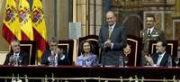
Los Reyes y el Gobierno en pleno celebran este lunes a Cádiz un acto institucional en homenaje del Bicentenario de la promulgación de la Constitución de 1812, la primera que estableció en nuestro país la soberanía popular, la división de poderes, la libertad de expresión y de imprenta, convirtiéndose así en una de las más liberales de su tiempo.
Los máximos representantes del poder legislativo y judicial también han acudido al acto en el Oratorio de San Felipe Neri, lugar donde se promulgó hace 200 años 'La Pepa', llamada así porque vio la luz el día de San José.
En el interior del Oratorio se han sucedido los discursos, por este orden, de los presidentes del Senado, Pío García-Escudero; Congreso, Jesús Posada; el jefe del Ejecutivo, Mariano Rajoy, y finalmente el Rey.
Tras los discursos, los Reyes, acompañados por el resto de autoridades, realizarán una ofrenda ante el monumento a las Cortes de Cádiz de 1812 en la Plaza de España, donde sonará el himno nacional.
Para el acto en el Oratori se han cursado unas 300 invitaciones, que incluyen a los presidentes del Supremo y el Consejo General del Poder Judicial, Carlos Dívar; del Constitucional, Pascual Sala; de la Junta de Andalucía, José Antonio Griñán, así como a los miembros de las respectivas Mesas del Congreso y Senado y a los portavoces parlamentarios.
También se ha invitado al acto a todos los embajadores iberoamericanos, de Portugal y Filipinas. La Cumbre Iberoamericana se celebrará este año en Cádiz en noviembre coincidiendo precisamente con el bicentenario de la Constitución de 1812, que influyó en la redacción de varias constituciones europeas y repercutió en los fundamentos constitucionales de la mayoría de los estados americanos tras su independencia.
Con este acto institucional, se conmemora el nacimiento de las libertades y los derechos civiles en nuestro país, del concepto de ciudadano y de la España Moderna.
Se trata pues de "hacer memoria histórica" y celebrar un acontecimiento que ha convertido a España en "una de las democracias más fuertes del mundo", explica el Consorcio establecido para la organización de los actos de conmemoración y que integran miembros del Gobierno, de la Junta de Andalucía y de la Diputación y el Ayuntamiento de Cádiz.
Iniciativa en Twitter
Rajoy también ha elegido este lunes su artículo preferido de la Constitución de 1812 y lo ha difundido desde su cuenta personal en Twitter, dando así el pistoletazo de salida a una iniciativa puesta en marcha por Acción Cultural Española para divulgar a través de las redes sociales Twitter y Facebook el contenido de la primera Carta Magna promulgada en nuestro país, una de las más liberales de su tiempo.
Para ello, Acción Cultural Española ha pedido a políticos, académicos, periodistas y personalidades del mundo de la cultura que envíen también, desde sus cuentas de Twitter su artículo preferido de la Constitución de 1812.
Entre otros, participarán en esta iniciativa la vicepresidenta del Gobierno, Soraya Sáenz de Santamaría, el ministro de Cultura y Educación, José Ignacio Wert; la alcaldesa de Cádiz, Teófila Martínez, el secretario general del PSOE, Alfredo Pérez Rubalcaba, los directores de varios periódicos y periodistas de televisión y radio.
2012-03-18T20:38:47Z
Cuatro personas mueren en las carreteras hasta el domingo en el puente de San José
Cuatro personas mueren en las carreteras hasta el domingo en el puente de San José
EFE
Los cuatro accidentes se han producido en Cataluña (dos), Valencia y Guadalajara.
Una mujer ha muerto arrollada por un ciclista cuando cruzaba una carretera.
La DGT preveía cuatro millones de desplazamientos durante el puente de San José.
Cuatro personas han muerto en sendos accidentes de tráfico mortales ocurridos desde que comenzó la operación especial de la Dirección General de Tráfico (DGT) con motivo del puente de San José en el que estaban previstos cuatro millones de desplazamientos. Entre las 15.00 del viernes y las 20.00 del domingo, se han registrado cuatro accidentes mortales en Cataluña, Guadalajara y Valencia, ha informado la DGT.Dos de los accidentes mortales han tenido lugar hoy en la Cataluña: uno en Lleida, en la A-2 a la altura de Golmes, donde un hombre se ha salido de la vía; y el otro, en Girona, en el que una mujer de 38 años ha fallecido tras ser atropellada por un ciclista en la N-260 en Vilafant.Según las primeras investigaciones de la policía catalana, en el momento del accidente la mujer estaba cruzando la carretera por un paso de cebra regulado por un semáforo, aunque se desconoce si estaba en verde para los peatones. En ese momento venía por la carretera un grupo de doce ciclistas que ha logrado esquivar a la mujer excepto uno, que ha impactado contra ella.El sábado por la tarde, en Guadalajara, tuvo lugar otro atropello mortal cuando un vehículo arrolló a un peatón en la carretera CM-2113 a la altura de la localidad de Saelices de la Sal.El cuarto accidente mortal del fin de semana tuvo lugar la tarde del viernes en Valencia, cuando un hombre fallecía al volcar el tractor que conducía en el término municipal de Carlet. El accidente se produjo, por causas no precisadas, en un camino que discurre a la altura del kilómetro 37 de la carretera CV-50 Lliria y Tavernes de Valldigna.
EFE
- Los cuatro accidentes se han producido en Cataluña (dos), Valencia y Guadalajara.
- Una mujer ha muerto arrollada por un ciclista cuando cruzaba una carretera.
- La DGT preveía cuatro millones de desplazamientos durante el puente de San José.
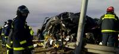
Cuatro personas han muerto en sendos accidentes de tráfico mortales ocurridos desde que comenzó la operación especial de la Dirección General de Tráfico (DGT) con motivo del puente de San José en el que estaban previstos cuatro millones de desplazamientos. Entre las 15.00 del viernes y las 20.00 del domingo, se han registrado cuatro accidentes mortales en Cataluña, Guadalajara y Valencia, ha informado la DGT.
Dos de los accidentes mortales han tenido lugar hoy en la Cataluña: uno en Lleida, en la A-2 a la altura de Golmes, donde un hombre se ha salido de la vía; y el otro, en Girona, en el que una mujer de 38 años ha fallecido tras ser atropellada por un ciclista en la N-260 en Vilafant.
Según las primeras investigaciones de la policía catalana, en el momento del accidente la mujer estaba cruzando la carretera por un paso de cebra regulado por un semáforo, aunque se desconoce si estaba en verde para los peatones. En ese momento venía por la carretera un grupo de doce ciclistas que ha logrado esquivar a la mujer excepto uno, que ha impactado contra ella.
El sábado por la tarde, en Guadalajara, tuvo lugar otro atropello mortal cuando un vehículo arrolló a un peatón en la carretera CM-2113 a la altura de la localidad de Saelices de la Sal.
El cuarto accidente mortal del fin de semana tuvo lugar la tarde del viernes en Valencia, cuando un hombre fallecía al volcar el tractor que conducía en el término municipal de Carlet. El accidente se produjo, por causas no precisadas, en un camino que discurre a la altura del kilómetro 37 de la carretera CV-50 Lliria y Tavernes de Valldigna.
2012-03-18T17:36:15Z
Báñez asegura que "no se bajará ni un solo euro" del PER que corresponde a Andalucía
Báñez asegura que "no se bajará ni un solo euro" del PER que corresponde a Andalucía
EFE
La ministra de Empleo ha aseverado que la comunidad dispondrá de los 215 millones del Plan de Empleo Rural.
Esas cantidades están "más que garantizadas para la agricultura de Andalucía", y saldrán de los Presupuestos Generales del Estado, según ella.
Báñez aseguró que en 80 días el Gobierno del PP "ha hecho más que los socialistas en ocho años".
La ministra de Empleo y Seguridad Social, Fátima Báñez, ha manifestado este domingo que Andalucía recibirá 215 millones de euros para el Plan de Empleo Rural (PER) dentro los Presupuestos Generales del Estado.En un mitin del PP en Rota (Cádiz), Báñez ha destacado que en la próxima semana va a "convocar a los sindicatos agrarios para repartir lo correspondiente al PER con unas cantidades en las que no se van a bajar ni un solo euro", ha explicado.Además, la ministra ha recordado que los 215 millones de euros del PER "están más que garantizados para la agricultura de Andalucía, los cuáles se presentarán con los Presupuestos Generales del Estado el próximo 30 de marzo".Asimismo, Báñez ha destacado que a pesar de que el presupuesto será "austero y de crisis", el PER "no va a recibir ni un euro menos", porque "sé como andaluza lo bueno y necesario que es para esta tierra, para que mucha gente pueda permanecer en sus pueblos", y por tanto, el PER "está garantizado con un gobierno del PP, al ser una prioridad".Por otra parte, Báñez ha animado al "cambio en Andalucía" en las próximas elecciones autonómicas y ha destacado que el PP se "va a dejar la piel frente al paro y la crisis que son las principales lacras de esta tierra".La ministra de Empleo ha asegurado que en 80 días el Gobierno del PP "ha hecho más que un gobierno socialista en ocho años", a pesar de que "nos han dejado un país en emergencia económica y social".
EFE
- La ministra de Empleo ha aseverado que la comunidad dispondrá de los 215 millones del Plan de Empleo Rural.
- Esas cantidades están "más que garantizadas para la agricultura de Andalucía", y saldrán de los Presupuestos Generales del Estado, según ella.
- Báñez aseguró que en 80 días el Gobierno del PP "ha hecho más que los socialistas en ocho años".
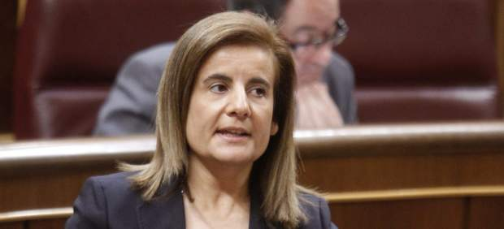
La ministra de Empleo y Seguridad Social, Fátima Báñez, ha manifestado este domingo que Andalucía recibirá 215 millones de euros para el Plan de Empleo Rural (PER) dentro los Presupuestos Generales del Estado.
En un mitin del PP en Rota (Cádiz), Báñez ha destacado que en la próxima semana va a "convocar a los sindicatos agrarios para repartir lo correspondiente al PER con unas cantidades en las que no se van a bajar ni un solo euro", ha explicado.
Además, la ministra ha recordado que los 215 millones de euros del PER "están más que garantizados para la agricultura de Andalucía, los cuáles se presentarán con los Presupuestos Generales del Estado el próximo 30 de marzo".
Asimismo, Báñez ha destacado que a pesar de que el presupuesto será "austero y de crisis", el PER "no va a recibir ni un euro menos", porque "sé como andaluza lo bueno y necesario que es para esta tierra, para que mucha gente pueda permanecer en sus pueblos", y por tanto, el PER "está garantizado con un gobierno del PP, al ser una prioridad".
Por otra parte, Báñez ha animado al "cambio en Andalucía" en las próximas elecciones autonómicas y ha destacado que el PP se "va a dejar la piel frente al paro y la crisis que son las principales lacras de esta tierra".
La ministra de Empleo ha asegurado que en 80 días el Gobierno del PP "ha hecho más que un gobierno socialista en ocho años", a pesar de que "nos han dejado un país en emergencia económica y social".
2012-03-18T13:48:07Z
Dos supervivientes españoles de Mauthausen: "Hay que localizar a los desaparecidos en conflictos"
Dos supervivientes españoles de Mauthausen: "Hay que localizar a los desaparecidos en conflictos"
EFE
Antonio Ballesta, de 101 años, y Francisco Aura, de 94, fueron apresados por los nazis al huir a Francia tras la Guerra Civil española.
Los dos cuentan el horror que vivieron en un documental sobre el campo de concentración alemán.
Ambos ven necesario que se "cierren heridas" sobre los episodios atroces para que las familias puedan "descansar".
Ballesta y Aura son "partidarios de hablar, pues para ellos supone una liberación".
Dos supervivientes españoles del campo de concentración de Mauthausen consideran necesaria la localización de desaparecidos y fallecidos en conflictos bélicos para "cerrar heridas" y, aunque han tratado de "olvidar" para retomar sus vidas, piden que estos episodios atroces no mueran en la memoria de la sociedad. Solo así las familias podrán "descansar".Es la opinión de dos alicantinos, Antonio Ballesta, de 101 años, y Francisco Aura, de 94, quienes han dado su testimonio de vida y horror en el documental Estación de peaje, elaborado por la Fundación General de la Universidad de Alicante, bajo la dirección histórica del catedrático Josep Miquel Santacreu.Ballesta ha comentado, entre fotografía y fotografía, algunos aspectos de aquel horror, como la falta de alimentos: "Los mendrugos de pan que ellos (los nazis) tiraban, para nosotros eran un banquete", ha rememorado.Aunque intenta decir más cosas de las que su salud le deja, recuerda que perdió a Raúl, su mejor amigo, mientras su hermana, con la que vive, relata que "Antonio subía aquella escalera famosa de Mauthausen casi desnudo y cargando sobre su espalda ladrillos".Mientras habla, de forma pausada y áspera, enseña las cartas que enviaba a su familia y algunos carnés identificativos de aquellos años "cuando yo tenía el pelo negro", dice entre risas. "Yo pensaba que las cartas las tiraban al retrete, pero llegaron", afirma aún sorprendido.Sobrevivir al horror naziEl documental, cuyo título responde a la traducción en español de Mauthausen, plasma con entrevistas e imágenes "la supervivencia" de estos dos antiguos combatientes del Ejército republicano que, tras huir a Francia finalizado el conflicto bélico español, fueron apresados por las tropas nazis.En declaraciones, Santacreu ha explicado que, a pesar de que más de 500 valencianos estuvieron presos en Mauthausen (de los que alrededor de 200 lograron sobrevivir), "muy pocos de estos últimos han querido rememorar ante una cámara lo que padecieron".La mayoría de los supervivientes "aún tiene miedo de narrar lo ocurrido", pero Ballesta y Aura son "partidarios de hablar, pues para ellos supone una liberación".Ambos presentan problemas de salud, pero "tienen lucidez mental", lo que les permite "recordar y comentar". "Son dos supervivientes natos", ha añadido el catedrático."Mientras los entrevistaba me preguntaba constantemente cómo pueden pasar esas cosas, cómo el ser humano puede llegar a esos niveles de degradar al prójimo, pero también de cómo una persona es capaz de sobrevivir", señala Santacreu.Viaje a MauthausenAdemás del testimonio de estos dos alicantinos, que permanecieron en Mauthausen entre 1941 y 1945, los realizadores viajaron hasta el campo de concentración para rodar imágenes y entrevistaron a jóvenes alemanes, italianos y españoles que visitan con sus colegios estas históricas instalaciones del horror.A pesar de que ambos combatieron con el ejército republicano y sufrieron las condiciones de Mauthausen, Ballesta y Aura no se conocen.Salieron de España por lugares distintos y los franceses los recogieron en campos de exiliados. Sin embargo, al cabo de un tiempo les comunicaron que no podían seguir allí, que "si querían podían enrolarse en la Legión francesa, formar parte de los batallones de trabajadores de la línea Maginot (fortificación defensiva gala en la frontera con Alemania) o buscar trabajo".Ballesta, que decidió por lo segundo, fue apresado por los alemanes cuando estos invadieron Francia.En el campo de concentración, vio "caer a muchos", sufrió severos castigos, algunos "por el simple hecho de no saber decir bien su número en alemán", y siempre intentó situarse en medio de los pelotones de trabajo para evitar los golpes de los alemanes.Las familias de estos dos alicantinos guardan la correspondencia que estos les remitían desde Mauthausen, lo que les permitía conocer que aún seguían vivos y dónde estaban.
EFE
- Antonio Ballesta, de 101 años, y Francisco Aura, de 94, fueron apresados por los nazis al huir a Francia tras la Guerra Civil española.
- Los dos cuentan el horror que vivieron en un documental sobre el campo de concentración alemán.
- Ambos ven necesario que se "cierren heridas" sobre los episodios atroces para que las familias puedan "descansar".
- Ballesta y Aura son "partidarios de hablar, pues para ellos supone una liberación".
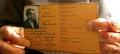
Dos supervivientes españoles del campo de concentración de Mauthausen consideran necesaria la localización de desaparecidos y fallecidos en conflictos bélicos para "cerrar heridas" y, aunque han tratado de "olvidar" para retomar sus vidas, piden que estos episodios atroces no mueran en la memoria de la sociedad. Solo así las familias podrán "descansar".
Es la opinión de dos alicantinos, Antonio Ballesta, de 101 años, y Francisco Aura, de 94, quienes han dado su testimonio de vida y horror en el documental Estación de peaje, elaborado por la Fundación General de la Universidad de Alicante, bajo la dirección histórica del catedrático Josep Miquel Santacreu.
Ballesta ha comentado, entre fotografía y fotografía, algunos aspectos de aquel horror, como la falta de alimentos: "Los mendrugos de pan que ellos (los nazis) tiraban, para nosotros eran un banquete", ha rememorado.
Aunque intenta decir más cosas de las que su salud le deja, recuerda que perdió a Raúl, su mejor amigo, mientras su hermana, con la que vive, relata que "Antonio subía aquella escalera famosa de Mauthausen casi desnudo y cargando sobre su espalda ladrillos".
Mientras habla, de forma pausada y áspera, enseña las cartas que enviaba a su familia y algunos carnés identificativos de aquellos años "cuando yo tenía el pelo negro", dice entre risas. "Yo pensaba que las cartas las tiraban al retrete, pero llegaron", afirma aún sorprendido.
Sobrevivir al horror nazi
El documental, cuyo título responde a la traducción en español de Mauthausen, plasma con entrevistas e imágenes "la supervivencia" de estos dos antiguos combatientes del Ejército republicano que, tras huir a Francia finalizado el conflicto bélico español, fueron apresados por las tropas nazis.
En declaraciones, Santacreu ha explicado que, a pesar de que más de 500 valencianos estuvieron presos en Mauthausen (de los que alrededor de 200 lograron sobrevivir), "muy pocos de estos últimos han querido rememorar ante una cámara lo que padecieron".
La mayoría de los supervivientes "aún tiene miedo de narrar lo ocurrido", pero Ballesta y Aura son "partidarios de hablar, pues para ellos supone una liberación".
Ambos presentan problemas de salud, pero "tienen lucidez mental", lo que les permite "recordar y comentar". "Son dos supervivientes natos", ha añadido el catedrático.
"Mientras los entrevistaba me preguntaba constantemente cómo pueden pasar esas cosas, cómo el ser humano puede llegar a esos niveles de degradar al prójimo, pero también de cómo una persona es capaz de sobrevivir", señala Santacreu.
Viaje a Mauthausen
Además del testimonio de estos dos alicantinos, que permanecieron en Mauthausen entre 1941 y 1945, los realizadores viajaron hasta el campo de concentración para rodar imágenes y entrevistaron a jóvenes alemanes, italianos y españoles que visitan con sus colegios estas históricas instalaciones del horror.
A pesar de que ambos combatieron con el ejército republicano y sufrieron las condiciones de Mauthausen, Ballesta y Aura no se conocen.
Salieron de España por lugares distintos y los franceses los recogieron en campos de exiliados. Sin embargo, al cabo de un tiempo les comunicaron que no podían seguir allí, que "si querían podían enrolarse en la Legión francesa, formar parte de los batallones de trabajadores de la línea Maginot (fortificación defensiva gala en la frontera con Alemania) o buscar trabajo".
Ballesta, que decidió por lo segundo, fue apresado por los alemanes cuando estos invadieron Francia.
En el campo de concentración, vio "caer a muchos", sufrió severos castigos, algunos "por el simple hecho de no saber decir bien su número en alemán", y siempre intentó situarse en medio de los pelotones de trabajo para evitar los golpes de los alemanes.
Las familias de estos dos alicantinos guardan la correspondencia que estos les remitían desde Mauthausen, lo que les permitía conocer que aún seguían vivos y dónde estaban.
2012-03-18T11:13:50Z
Las adopciones internacionales ya no están al alcance de todos, solo de funcionarios o titulados
Las adopciones internacionales ya no están al alcance de todos, solo de funcionarios o titulados
EUROPA PRESS
La crisis ha provocado que en 2011 solo este perfil pueda optar a adopciones internacionales.
Una experta cree que la inseguridad económica es la que hace que las familias "no se lancen a esto porque tiene sus riesgos".
"Muchas de las familias que antes de 2011 podían ahora están en el paro, por lo que se quedan los pudientes, los que tienen el sueldo fijo", dice una psicóloga.
La crisis ha provocado que en 2011 solo los funcionarios o titulados superiores pudieran seguir optando a las adopciones internacionales de menores. Anteriormente, este trámite estaba al alcance de cualquier familia, desde una persona que trabaja en un kiosco hasta empresarios de pymes, pero las circunstancias de la recesión económica ha hecho que este perfil desaparezca.Así coinciden la psicóloga de Amofrem, Lola García, y la directora de Feyda, María Angeles Amorós, quienes señalan que el perfil actual responde a "funcionarios o personas con titulación universitaria".En opinión de Amorós, la inseguridad económica hace que las familias "no se lancen a esto, que es una aventura que nunca sabes cómo va a salir y tiene sus riesgos".Desde la entidad colaboradora para las adopciones internacionales (ECAI) Amofrem, Lola García apunta que "muchas de las familias que antes de 2011 podían ahora están en el paro, por lo que se quedan los pudientes, los que tienen el sueldo fijo, como los médicos, abogados, funcionaros"; en definitiva, titulados superiores.Otra visión, en este caso compartida por Amofrem, es que la crisis, de una u otra manera, "ha frenado el que las familias hayan hecho adopciones internacionales".Descenso en las adopcionesMientras que en 2010 se realizaron desde Amofrem 60 tramitaciones en el conjunto nacional (65 niños), en 2011 se observó una clara disminución al venir a España 40 niños. Un descenso que Lola García atribuye a la actual etapa de recesión económica, dado que en Etiopía, que es el país con el que trabajan, los trámites siguen siendo los mismos. Sin embargo, prevé para este año que los datos sean mejores.Esta lectura, desde Feyda, es diferente, en el sentido de que sí que han observado una disminución en las adopciones, sobre todo de 2009 a 2010, pero no por la crisis, sino por el proceso mismo que se hace ahora y en la línea de las asignaciones, ya que la ECAI "solo percibe dinero cuando hace una adopción, y si en lugar de realizar 80 se hacen 30, ese dinero menos entra en la ECAI".En concreto, los datos de Feyda reflejan un descenso de 2009 a 2010, mientras que los datos en 2010 y 2011 son "parecidos". Así, reconoce que las adopciones "han disminuido casi a la mitad pero porque el país está adecuando mejor su propio proceso de adopción y eso hace que nos pidan más documentación, lo que entraña más tiempo y, por consiguiente, menos adopciones".Por ejemplo, ha explicado, "antes los niños no tenían partida de nacimiento biológica y ahora, para iniciar la documentación de un niño que sea adoptable hay que inscribirlo en el registro civil de partida de nacimiento biológica, con el tutor, el padre o la madre y luego tiene que ir a la Corte y testificarlo con tres personas".En 2010 Feyda realizó 36 adopciones en el conjunto nacional, y en 2011, descendió hasta las 32 adopciones. Ambas ECAI coinciden en argumentar que no existe un prototipo específico de familias adoptantes.Por su parte, Amorós ha reconocido que al comienzo de las adopciones existió este proceso a la carta: "Sacabas los niños y a ver cuál le gustaba, no era ilegal porque todo se hacía de forma legal, pero no era honesto".Un panorama que, según ha desvelado, ha cambiado, ya que "se ha ido estableciendo que lo más importante es el niño y sus intereses son los que priman, y eso se ha ido afianzando más". "La sociedad ahora es multicultural, y eso nos hace un poco mejores", ha destacado.Los trámites para adoptarHay que tener en cuenta que la tramitación del expediente para la adopción se puede hacer a través de una entidad colaboradora de adopción internacional (ECAI) o bien directamente a través del Ministerio de Sanidad.Para todos los casos existe la obligación de realizar los informes de seguimiento y enviarlos al país de origen del menor adoptado y en la lengua oficial del mismo.
EUROPA PRESS
- La crisis ha provocado que en 2011 solo este perfil pueda optar a adopciones internacionales.
- Una experta cree que la inseguridad económica es la que hace que las familias "no se lancen a esto porque tiene sus riesgos".
- "Muchas de las familias que antes de 2011 podían ahora están en el paro, por lo que se quedan los pudientes, los que tienen el sueldo fijo", dice una psicóloga.
La crisis ha provocado que en 2011 solo los funcionarios o titulados superiores pudieran seguir optando a las adopciones internacionales de menores. Anteriormente, este trámite estaba al alcance de cualquier familia, desde una persona que trabaja en un kiosco hasta empresarios de pymes, pero las circunstancias de la recesión económica ha hecho que este perfil desaparezca.
Así coinciden la psicóloga de Amofrem, Lola García, y la directora de Feyda, María Angeles Amorós, quienes señalan que el perfil actual responde a "funcionarios o personas con titulación universitaria".
En opinión de Amorós, la inseguridad económica hace que las familias "no se lancen a esto, que es una aventura que nunca sabes cómo va a salir y tiene sus riesgos".
Desde la entidad colaboradora para las adopciones internacionales (ECAI) Amofrem, Lola García apunta que "muchas de las familias que antes de 2011 podían ahora están en el paro, por lo que se quedan los pudientes, los que tienen el sueldo fijo, como los médicos, abogados, funcionaros"; en definitiva, titulados superiores.
Otra visión, en este caso compartida por Amofrem, es que la crisis, de una u otra manera, "ha frenado el que las familias hayan hecho adopciones internacionales".
Descenso en las adopciones
Mientras que en 2010 se realizaron desde Amofrem 60 tramitaciones en el conjunto nacional (65 niños), en 2011 se observó una clara disminución al venir a España 40 niños.
Un descenso que Lola García atribuye a la actual etapa de recesión económica, dado que en Etiopía, que es el país con el que trabajan, los trámites siguen siendo los mismos. Sin embargo, prevé para este año que los datos sean mejores.
Esta lectura, desde Feyda, es diferente, en el sentido de que sí que han observado una disminución en las adopciones, sobre todo de 2009 a 2010, pero no por la crisis, sino por el proceso mismo que se hace ahora y en la línea de las asignaciones, ya que la ECAI "solo percibe dinero cuando hace una adopción, y si en lugar de realizar 80 se hacen 30, ese dinero menos entra en la ECAI".
En concreto, los datos de Feyda reflejan un descenso de 2009 a 2010, mientras que los datos en 2010 y 2011 son "parecidos". Así, reconoce que las adopciones "han disminuido casi a la mitad pero porque el país está adecuando mejor su propio proceso de adopción y eso hace que nos pidan más documentación, lo que entraña más tiempo y, por consiguiente, menos adopciones".
Por ejemplo, ha explicado, "antes los niños no tenían partida de nacimiento biológica y ahora, para iniciar la documentación de un niño que sea adoptable hay que inscribirlo en el registro civil de partida de nacimiento biológica, con el tutor, el padre o la madre y luego tiene que ir a la Corte y testificarlo con tres personas".
En 2010 Feyda realizó 36 adopciones en el conjunto nacional, y en 2011, descendió hasta las 32 adopciones. Ambas ECAI coinciden en argumentar que no existe un prototipo específico de familias adoptantes.
Por su parte, Amorós ha reconocido que al comienzo de las adopciones existió este proceso a la carta: "Sacabas los niños y a ver cuál le gustaba, no era ilegal porque todo se hacía de forma legal, pero no era honesto".
Un panorama que, según ha desvelado, ha cambiado, ya que "se ha ido estableciendo que lo más importante es el niño y sus intereses son los que priman, y eso se ha ido afianzando más". "La sociedad ahora es multicultural, y eso nos hace un poco mejores", ha destacado.
Los trámites para adoptar
Hay que tener en cuenta que la tramitación del expediente para la adopción se puede hacer a través de una entidad colaboradora de adopción internacional (ECAI) o bien directamente a través del Ministerio de Sanidad.
Para todos los casos existe la obligación de realizar los informes de seguimiento y enviarlos al país de origen del menor adoptado y en la lengua oficial del mismo.
2012-03-17T20:20:56Z
Rajoy: "No soy partidario del copago en la sanidad"
Rajoy: "No soy partidario del copago en la sanidad"
EFE
El presidente del Gobierno ha declarado que "no es un asunto que esté sobre la mesa".
Hizo estas declaraciones en la rueda de prensa posterior a su reunión con el presidente de Ecuador, Rafael Correa.
La vicepresidenta, Soraya Sáenz de Santamaría, señaló que "no se ha abordado" en el Consejo de Ministros.
El presidente del Gobierno, Mariano Rajoy, ha declarado este sábado que no es "partidario" de establecer el copago en la sanidad."No es un asunto que esté sobre la mesa (..) no se ha tratado en el consejo de ministros", ha asegurado Rajoy en una rueda de prensa tras reunirse en el palacio de la Moncloa con el presidente de Ecuador, Rafael Correa."Y si me preguntan mi opinión personal, yo no soy partidario del copago en la sanidad", ha añadido.Más categórico que la vicepresidentaLa vicepresidenta del Gobierno, Soraya Sáenz de Santamaría, aseguró este viernes que el Gobierno no se está planteando extender el copago en el sistema sanitario español. "No se ha abordado ni está en la mesa del Consejo de Ministros", ha respondido la número del Ejecutivo tras la reunión del Consejo de Ministros."Así de simple y así de claro", zanjó Sáenz de Santamaría al ser preguntada por la posibilidad de establecer algún tipo de mecanismo por el que los pacientes asuman parte del coste de la Sanidad para garantizar la viabilidad del sistema, pero no mostró su posición personal, al contrario que Rajoy.La ministra de Sanidad, Ana Mato, aseguró el jueves que el Gobierno buscará "mecanismos" que contribuyan a asegurar la sostenibilidad del Sistema Nacional de Salud (SNS) y racionalizar el gasto, y que garantizará a los ciudadanos una sanidad pública "universal, de calidad y gratuita". Mato hizo estas declaraciones después de que el Parlamento de Cataluña aprobara, gracias a la abstención del Partido Popular, la Ley de Medidas Fiscales y Financieras que instaura el copago sanitario.
EFE
- El presidente del Gobierno ha declarado que "no es un asunto que esté sobre la mesa".
- Hizo estas declaraciones en la rueda de prensa posterior a su reunión con el presidente de Ecuador, Rafael Correa.
- La vicepresidenta, Soraya Sáenz de Santamaría, señaló que "no se ha abordado" en el Consejo de Ministros.
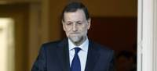
El presidente del Gobierno, Mariano Rajoy, ha declarado este sábado que no es "partidario" de establecer el copago en la sanidad.
"No es un asunto que esté sobre la mesa (..) no se ha tratado en el consejo de ministros", ha asegurado Rajoy en una rueda de prensa tras reunirse en el palacio de la Moncloa con el presidente de Ecuador, Rafael Correa.
"Y si me preguntan mi opinión personal, yo no soy partidario del copago en la sanidad", ha añadido.
Más categórico que la vicepresidenta
La vicepresidenta del Gobierno, Soraya Sáenz de Santamaría, aseguró este viernes que el Gobierno no se está planteando extender el copago en el sistema sanitario español. "No se ha abordado ni está en la mesa del Consejo de Ministros", ha respondido la número del Ejecutivo tras la reunión del Consejo de Ministros.
"Así de simple y así de claro", zanjó Sáenz de Santamaría al ser preguntada por la posibilidad de establecer algún tipo de mecanismo por el que los pacientes asuman parte del coste de la Sanidad para garantizar la viabilidad del sistema, pero no mostró su posición personal, al contrario que Rajoy.
La ministra de Sanidad, Ana Mato, aseguró el jueves que el Gobierno buscará "mecanismos" que contribuyan a asegurar la sostenibilidad del Sistema Nacional de Salud (SNS) y racionalizar el gasto, y que garantizará a los ciudadanos una sanidad pública "universal, de calidad y gratuita". Mato hizo estas declaraciones después de que el Parlamento de Cataluña aprobara, gracias a la abstención del Partido Popular, la Ley de Medidas Fiscales y Financieras que instaura el copago sanitario.
2012-03-17T14:48:08Z
Rajoy carga contra el PSOE por no haber limitado los sueldos de directivos bancarios
Rajoy carga contra el PSOE por no haber limitado los sueldos de directivos bancarios
EFE / VÍDEO: ATLAS
El Gobierno de Rajoy limitó los salarios de los responsables de bancos, algo que ha utilizado para reprochar al PSOE no hacerlo cuando estaba en el poder.
"¿Quién lo ha hecho? ¿Lo ha hecho la izquierda que tanto presume?", dijo el jefe del Ejecutivo, en referencia a una medida asociada a ideologías más progresistas.
Rajoy defendió la necesidad de hacer reformas y tachó de "inmovilistas" e "irresponsables" a los que se oponen a ello.
El presidente del Gobierno, Mariano Rajoy, ha reprochado este sábado al PSOE presumir de ser de izquierdas y no haber adoptado una decisión que él ha tomado: limitar el sueldo de los ejecutivos de las entidades financieras que han recibido ayudas públicas.Rajoy ha lanzado esa crítica a los socialistas en el acto que ha protagonizado en Oviedo en apoyo a la candidata del PP a la Presidencia de Asturias, Mercedes Fernández, y en el que ha justificado la decisión de este viernes del Consejo de ministros de eliminar una serie de entes públicos que considera que no tenían razón de ser.El líder del PP se ha mostrado orgulloso de las medidas que ha ido adoptando desde que llegó a la Presidencia del Gobierno con el objetivo de lograr la recuperación económica y la creación de empleo, unas reformas que pretende que sean justas y equitativas, ha recalcado.En la defensa de esas iniciativas es cuando Rajoy ha preguntado qué Gobierno se ha atrevido a limitar el sueldo de los ejecutivos de entidades financieras con ayudas."¿Quién lo ha hecho? ¿Lo ha hecho la izquierda que tanto presume? ¿Lo han hecho ellos?", ha planteado el presidente del Gobierno entre aplausos de los asistentes al acto.Rajoy ha recordado también la decisión del Consejo de ministros de eliminar una serie de entes públicos y organismos que ha dicho que "lo único que tenían eran presidente y consejeros", ya que no había trabajadores."¿Para qué estaban esos presidentes y consejeros?"¿Cuál era la función?" Eso (la eliminación de estos organismos) lo hemos hecho nosotros, no la izquierda. Ellos no han sido capaces de hacerlo", ha vuelto a reprochar al PSOE.Los que se oponen a sus reformas son "irresponsables"Rajoy ha defendido este sábado la necesidad de las reformas que está emprendiendo su Ejecutivo y ha considerado que quienes se oponen a ellas están instalados en el inmovilismo y sería irresponsable hacer caso a las voces que, ante la situación actual, piden no hacer nada.El jefe del Ejecutivo, que en varias ocasiones a lo largo de su discurso ha dejado claro que va a seguir haciendo todas las reformas que considere necesarias, ha señalado que en ellas está el futuro."Quienes se oponen a las reformas, quienes dicen que no les gustan, quienes se oponen a todo, están en el inmovilismo, y yo aceptaré todo, pero lo único que no puedo aceptar, porque sería una irresponsabilidad, es que se me diga que no haga nada, porque eso es lo peor en estos momentos y conduce inevitablemente al fracaso", ha advertido.Rajoy ha insistido en que no se puede gobernar pensando en las próximas veinticuatro horas, sino en el largo plazo, y, por ello, es necesario tomar medidas ahora, "porque si no se siembra, jamás se va a cosechar nada".
EFE / VÍDEO: ATLAS
- El Gobierno de Rajoy limitó los salarios de los responsables de bancos, algo que ha utilizado para reprochar al PSOE no hacerlo cuando estaba en el poder.
- "¿Quién lo ha hecho? ¿Lo ha hecho la izquierda que tanto presume?", dijo el jefe del Ejecutivo, en referencia a una medida asociada a ideologías más progresistas.
- Rajoy defendió la necesidad de hacer reformas y tachó de "inmovilistas" e "irresponsables" a los que se oponen a ello.
El presidente del Gobierno, Mariano Rajoy, ha reprochado este sábado al PSOE presumir de ser de izquierdas y no haber adoptado una decisión que él ha tomado: limitar el sueldo de los ejecutivos de las entidades financieras que han recibido ayudas públicas.
Rajoy ha lanzado esa crítica a los socialistas en el acto que ha protagonizado en Oviedo en apoyo a la candidata del PP a la Presidencia de Asturias, Mercedes Fernández, y en el que ha justificado la decisión de este viernes del Consejo de ministros de eliminar una serie de entes públicos que considera que no tenían razón de ser.
El líder del PP se ha mostrado orgulloso de las medidas que ha ido adoptando desde que llegó a la Presidencia del Gobierno con el objetivo de lograr la recuperación económica y la creación de empleo, unas reformas que pretende que sean justas y equitativas, ha recalcado.
En la defensa de esas iniciativas es cuando Rajoy ha preguntado qué Gobierno se ha atrevido a limitar el sueldo de los ejecutivos de entidades financieras con ayudas.
"¿Quién lo ha hecho? ¿Lo ha hecho la izquierda que tanto presume? ¿Lo han hecho ellos?", ha planteado el presidente del Gobierno entre aplausos de los asistentes al acto.
Rajoy ha recordado también la decisión del Consejo de ministros de eliminar una serie de entes públicos y organismos que ha dicho que "lo único que tenían eran presidente y consejeros", ya que no había trabajadores.
"¿Para qué estaban esos presidentes y consejeros?"¿Cuál era la función?" Eso (la eliminación de estos organismos) lo hemos hecho nosotros, no la izquierda. Ellos no han sido capaces de hacerlo", ha vuelto a reprochar al PSOE.
Los que se oponen a sus reformas son "irresponsables"
Rajoy ha defendido este sábado la necesidad de las reformas que está emprendiendo su Ejecutivo y ha considerado que quienes se oponen a ellas están instalados en el inmovilismo y sería irresponsable hacer caso a las voces que, ante la situación actual, piden no hacer nada.
El jefe del Ejecutivo, que en varias ocasiones a lo largo de su discurso ha dejado claro que va a seguir haciendo todas las reformas que considere necesarias, ha señalado que en ellas está el futuro.
"Quienes se oponen a las reformas, quienes dicen que no les gustan, quienes se oponen a todo, están en el inmovilismo, y yo aceptaré todo, pero lo único que no puedo aceptar, porque sería una irresponsabilidad, es que se me diga que no haga nada, porque eso es lo peor en estos momentos y conduce inevitablemente al fracaso", ha advertido.
Rajoy ha insistido en que no se puede gobernar pensando en las próximas veinticuatro horas, sino en el largo plazo, y, por ello, es necesario tomar medidas ahora, "porque si no se siembra, jamás se va a cosechar nada".
2012-03-19T17:09:16Z
La primavera llega este martes con 21 provincias españolas en alerta por frío, viento y nieve
La primavera llega este martes con 21 provincias españolas en alerta por frío, viento y nieve
AGENCIAS
Varias provincias de Andalucía, Castilla-La Mancha, Comunidad Valenciana y Aragón estarán en alerta por precipitaciones en forma de nieve.
Los termómetros continúan su descenso generalizado en toda la Península, con especial incidencia en el Sur peninsular y Baleares.
Lo más destacado de esta primavera será el tránsito de Venus por delante del Sol el 6 de junio, evento que no volverá a suceder hasta el año 2117.
Consulta toda la meteorología en tiempoytemperatura.es.
¿Dudas sobre la primavera? ¿Quieres saber el tiempo de esta semana en tu provincia? Emilio Rey (@digitalmeteo) te responde este jueves a las 13h.
Un total de 21 provincias españolas permanecerán este martes en alerta por frío, viento y nieve, según la Agencia Estatal de Meteorología (Aemet), pese a la llegada de la primavera que hará su entrada a las 6.14 horas, hora peninsular. La estación primaveral durará 92 días y 18 horas, y terminará el 21 de junio con el comienzo del verano.En concreto, cuatro comunidades autónomas se mantendrán en alerta naranja por nieve. Así, en la provincia de Almería se podrían acumular hasta siete centímetros de nieve en las zonas del Valle del Almanzora y Los Vélez, al igual que en Granada, donde las previsión de nevadas se concentra en la zona de Guadix y Baza.Por su parte, Jaén y Albacete podrían alcanzar los 20 centímetros de nieve en la Sierra de Cazorla y Segura, en el caso de la región andaluza, y en la zona de Hellín y Almansa, en el caso de la provincia castellano-manchega. Asimismo, Teruel, Ciudad Real, Cuenca, Alicante, Castellón y Murcia se mantendrán en alerta amarilla por nieve, al alcanzarse en algunas de estas regiones los cuatro centímetros de nieve acumulada.No obstante, la cota de nieve se mantendrá entre los 600 metros y los 900 metros en el Este de la Península, subiendo en las horas centrales del día hasta los 900 metros y los 1.500 metros.Descenso de las temperaturasTras las temperaturas primaverales registradas en la última semana los termómetros continúan su descenso generalizado en toda la Península, con especial incidencia en el Sur peninsular y Baleares.Así, Guadalajara permanecerá este martes en alerta amarilla por temperaturas mínimas junto a León y Zamora, ya que las tres provincias podrían registrar temperaturas de hasta -6ºC, al igual que Madrid que podría alcanzar los -7ºC en la sierra.Por su parte, la zona norte de la Península podría registrar heladas localmente moderadas a lo largo de la jornada.Precipitaciones en el tercio esteEn cuanto a las precipitaciones, la Aemet estima que se producirán lluvias débiles ocasionales en el Cantábrico, acompañadas de precipitaciones débiles o moderadas en Baleares, el Sur de Aragón, la Comunidad Valenciana y el Sureste de Castilla-La Mancha.Además, prevé que se registrarán precipitaciones en Murcia, Andalucía Oriental y Ceuta y Melilla que podrían extenderse, aunque de forma más débil, hacia otras zonas de le Península. En Galicia, el oeste de Castilla y León, Extremadura y Andalucía predominarán los cielos poco nubosos o despejados, al igual que en Canarias donde se registrarán intervalos nubosos en el norte de las islas occidentales.Cuatro planetas visiblesDesde el punto de vista astronómico, lo más destacado de esta estación será el tránsito de Venus por delante del Sol el 6 de junio, evento que no volverá a suceder hasta el año 2117. En España sólo podrá verse -con dificultad- en sus últimas fases.En cuanto a los planetas, en 2012 la primavera será una muy buena ocasión para verlos. Venus, Marte, Júpiter y Saturno serán visibles al principio de la noche durante la primera mitad de la primavera y, a medida que avance la estación, primero Júpiter y después Venus desaparecerán del cielo vespertino, que quedará dominado por Marte y Saturno.El inicio de las estaciones viene dado, por convenio, por aquellos instantes en que la Tierra está en unas determinadas posiciones en su órbita alrededor del Sol. En el caso de la primavera, ocurre cuando el centro del Sol, visto desde la Tierra, cruza el ecuador celeste en su movimiento aparente hacia el norte.Cuando esto sucede, la duración del día y la noche casi coinciden; circunstancia a la que se llama también equinoccio de primavera. Esta es la época del año en que la longitud del día se alarga más rápidamente.A las latitudes de la península, el Sol sale por las mañanas antes que el día anterior y por la tarde se pone más tarde. Como consecuencia, el tiempo en que el Sol está por encima del horizonte aumenta casi tres minutos cada día.
AGENCIAS
- Varias provincias de Andalucía, Castilla-La Mancha, Comunidad Valenciana y Aragón estarán en alerta por precipitaciones en forma de nieve.
- Los termómetros continúan su descenso generalizado en toda la Península, con especial incidencia en el Sur peninsular y Baleares.
- Lo más destacado de esta primavera será el tránsito de Venus por delante del Sol el 6 de junio, evento que no volverá a suceder hasta el año 2117.
- Consulta toda la meteorología en tiempoytemperatura.es.
- ¿Dudas sobre la primavera? ¿Quieres saber el tiempo de esta semana en tu provincia? Emilio Rey (@digitalmeteo) te responde este jueves a las 13h.
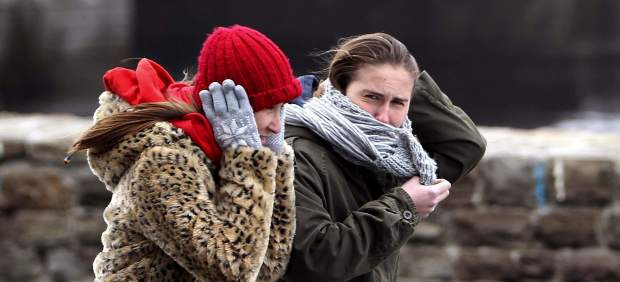
Un total de 21 provincias españolas permanecerán este martes en alerta por frío, viento y nieve, según la Agencia Estatal de Meteorología (Aemet), pese a la llegada de la primavera que hará su entrada a las 6.14 horas, hora peninsular. La estación primaveral durará 92 días y 18 horas, y terminará el 21 de junio con el comienzo del verano.
En concreto, cuatro comunidades autónomas se mantendrán en alerta naranja por nieve. Así, en la provincia de Almería se podrían acumular hasta siete centímetros de nieve en las zonas del Valle del Almanzora y Los Vélez, al igual que en Granada, donde las previsión de nevadas se concentra en la zona de Guadix y Baza.
Por su parte, Jaén y Albacete podrían alcanzar los 20 centímetros de nieve en la Sierra de Cazorla y Segura, en el caso de la región andaluza, y en la zona de Hellín y Almansa, en el caso de la provincia castellano-manchega. Asimismo, Teruel, Ciudad Real, Cuenca, Alicante, Castellón y Murcia se mantendrán en alerta amarilla por nieve, al alcanzarse en algunas de estas regiones los cuatro centímetros de nieve acumulada.
No obstante, la cota de nieve se mantendrá entre los 600 metros y los 900 metros en el Este de la Península, subiendo en las horas centrales del día hasta los 900 metros y los 1.500 metros.
Descenso de las temperaturas
Tras las temperaturas primaverales registradas en la última semana los termómetros continúan su descenso generalizado en toda la Península, con especial incidencia en el Sur peninsular y Baleares.
Así, Guadalajara permanecerá este martes en alerta amarilla por temperaturas mínimas junto a León y Zamora, ya que las tres provincias podrían registrar temperaturas de hasta -6ºC, al igual que Madrid que podría alcanzar los -7ºC en la sierra.
Por su parte, la zona norte de la Península podría registrar heladas localmente moderadas a lo largo de la jornada.
Precipitaciones en el tercio este
En cuanto a las precipitaciones, la Aemet estima que se producirán lluvias débiles ocasionales en el Cantábrico, acompañadas de precipitaciones débiles o moderadas en Baleares, el Sur de Aragón, la Comunidad Valenciana y el Sureste de Castilla-La Mancha.
Además, prevé que se registrarán precipitaciones en Murcia, Andalucía Oriental y Ceuta y Melilla que podrían extenderse, aunque de forma más débil, hacia otras zonas de le Península. En Galicia, el oeste de Castilla y León, Extremadura y Andalucía predominarán los cielos poco nubosos o despejados, al igual que en Canarias donde se registrarán intervalos nubosos en el norte de las islas occidentales.
Cuatro planetas visibles
Desde el punto de vista astronómico, lo más destacado de esta estación será el tránsito de Venus por delante del Sol el 6 de junio, evento que no volverá a suceder hasta el año 2117. En España sólo podrá verse -con dificultad- en sus últimas fases.
En cuanto a los planetas, en 2012 la primavera será una muy buena ocasión para verlos. Venus, Marte, Júpiter y Saturno serán visibles al principio de la noche durante la primera mitad de la primavera y, a medida que avance la estación, primero Júpiter y después Venus desaparecerán del cielo vespertino, que quedará dominado por Marte y Saturno.
El inicio de las estaciones viene dado, por convenio, por aquellos instantes en que la Tierra está en unas determinadas posiciones en su órbita alrededor del Sol. En el caso de la primavera, ocurre cuando el centro del Sol, visto desde la Tierra, cruza el ecuador celeste en su movimiento aparente hacia el norte.
Cuando esto sucede, la duración del día y la noche casi coinciden; circunstancia a la que se llama también equinoccio de primavera. Esta es la época del año en que la longitud del día se alarga más rápidamente.
A las latitudes de la península, el Sol sale por las mañanas antes que el día anterior y por la tarde se pone más tarde. Como consecuencia, el tiempo en que el Sol está por encima del horizonte aumenta casi tres minutos cada día.
2012-03-19T15:44:35Z
Interior prohíbe a los presos de ETA y del GRAPO firmar en las cartas como "presos políticos"
Interior prohíbe a los presos de ETA y del GRAPO firmar en las cartas como "presos políticos"
AGENCIAS
Los presos suelen incluir esta expresión junto a su nombre en el remite.
La intervención administrativa de cartas afecta a los presos de ETA, los GRAPO, terroristas islamistas y también a capos del crimen organizado.
Los presos que cumplen condena en España por delitos relacionados con el terrorismo tienen prohibido firmar con la expresión de "preso político" las cartas personales que envían al exterior. Los funcionarios que controlan las comunicaciones de los internos devuelven las misivas cuando detectan esta expresión para que sea eliminada o modificada si quieren que llegue a su destinatario, según han informado fuentes de la lucha antiterrorista.El caso más común es que los presos incluyan esta expresión junto a su nombre en el remite de los sobres que envían al exterior, aunque los funcionarios tienen la potestad de leer también el contenido íntegro de las cartas que escriben los presos condenados por delitos relacionados con el terrorismo.En las cárceles existen dos tipos de intervenciones: la judicial, que la ordena un juez y no es comunicada al preso y la que afecta a los presos terroristas, que se trata de una intervención administrativa, según han precisado las mismas fuentes consultadas. En este caso, los reclusos son informados de que la prisión va a intervenir tanto sus cartas como las visitas que reciben en el centro penitenciario.La intervención administrativa afecta a los presos de ETA, los GRAPO, terroristas islamistas y también a algunos capos del crimen organizado. En caso de que un preso consideré vulnerados sus derechos tiene la posibilidad de recurrir ante el juez de Vigilancia Penitenciaria, si bien son pocos los casos en los que estos recursos son admitidos, sobre todo a raíz de que se crease la figura del juez Central de Vigilancia Penitenciaria de la Audiencia Nacional, a partir del cuál se unificó el criterio a este respecto.Esta circunstancia ya ha generado las quejas entre algunos presos terroristas."Recientemente me impusieron una nueva prohibición, una más: a partir de ahora no puedo escribir en los sobres de mis cartas la firma "preso político", ni tampoco dibujar ninguna estrella roja, tal y como venía haciendo hasta ahora. De lo contrario, dichas cartas serán retenidas", denunciaba el pasado mes de diciembre el preso de los GRAPO David Garaboa Bonillo, quien cumple condena en la cárcel de Villena (Alicante).
AGENCIAS
- Los presos suelen incluir esta expresión junto a su nombre en el remite.
- La intervención administrativa de cartas afecta a los presos de ETA, los GRAPO, terroristas islamistas y también a capos del crimen organizado.
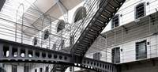
Los presos que cumplen condena en España por delitos relacionados con el terrorismo tienen prohibido firmar con la expresión de "preso político" las cartas personales que envían al exterior. Los funcionarios que controlan las comunicaciones de los internos devuelven las misivas cuando detectan esta expresión para que sea eliminada o modificada si quieren que llegue a su destinatario, según han informado fuentes de la lucha antiterrorista.
El caso más común es que los presos incluyan esta expresión junto a su nombre en el remite de los sobres que envían al exterior, aunque los funcionarios tienen la potestad de leer también el contenido íntegro de las cartas que escriben los presos condenados por delitos relacionados con el terrorismo.
En las cárceles existen dos tipos de intervenciones: la judicial, que la ordena un juez y no es comunicada al preso y la que afecta a los presos terroristas, que se trata de una intervención administrativa, según han precisado las mismas fuentes consultadas. En este caso, los reclusos son informados de que la prisión va a intervenir tanto sus cartas como las visitas que reciben en el centro penitenciario.
La intervención administrativa afecta a los presos de ETA, los GRAPO, terroristas islamistas y también a algunos capos del crimen organizado. En caso de que un preso consideré vulnerados sus derechos tiene la posibilidad de recurrir ante el juez de Vigilancia Penitenciaria, si bien son pocos los casos en los que estos recursos son admitidos, sobre todo a raíz de que se crease la figura del juez Central de Vigilancia Penitenciaria de la Audiencia Nacional, a partir del cuál se unificó el criterio a este respecto.
Esta circunstancia ya ha generado las quejas entre algunos presos terroristas."Recientemente me impusieron una nueva prohibición, una más: a partir de ahora no puedo escribir en los sobres de mis cartas la firma "preso político", ni tampoco dibujar ninguna estrella roja, tal y como venía haciendo hasta ahora. De lo contrario, dichas cartas serán retenidas", denunciaba el pasado mes de diciembre el preso de los GRAPO David Garaboa Bonillo, quien cumple condena en la cárcel de Villena (Alicante).
2012-03-19T13:38:06Z
España reclama que la reforma pesquera mantenga las ayudas al desguace "por un largo periodo"
España reclama que la reforma pesquera mantenga las ayudas al desguace "por un largo periodo"
EUROPA PRESS
Bruselas quiere eliminar las ayudas al desguace y otros apoyos a la reestructuración de la flota porque las ve ineficaces.
El ministro de Agricultura, Miguel Arias Cañete, reclama que se mantengan.
La comisaria europea de Pesca ha propuesto crea un fondo de 6.500 millones de euros para 2014-2020 que unifique el marco de las políticas pesquera y marítima.
Cañete aprovechará la reunión en Bruselas de los ministros de Pesca de la UE para pedir que se agilicen las negociaciones para un nuevo acuerdo con Marruecos.
El ministro de Agricultura, Alimentación y Medio Ambiente, Miguel Arias Cañete, ha reclamado este lunes que la reforma de la política pesquera común (PPC) que los 27 han de negociar este año mantenga "por lo menos por un largo periodo transitorio" las ayudas al desguace y otros apoyos a la reestructuración de la flota que Bruselas quiere eliminar porque las ve ineficaces."Consideramos que hay que hacer esfuerzos adicionales para que se pueda seguir financiando los desguaces y las paradas temporales, por lo menos por un largo periodo transitorio", ha dicho el ministro a la prensa en Bruselas, a su llegada a la reunión de ministros de Pesca de la UE que se celebra este lunes para abordar la reforma de la PPC y sus presupuestos.La comisaria de Pesca, Maria Damanaki, ha propuesto crear un fondo que aúne todos los instrumentos existentes en el marco de las políticas pesquera y marítima y que cuente con unos 6.500 millones de euros para el periodo 2014-2020.Se trata de una cifra que "España puede apoyar", ha dicho Cañete, pero incluyendo "esfuerzos adicionales" para no eliminar totalmente los apoyos a la reestructuración de la flota.Los titulares de Pesca de los 27 debaten este lunes la dotación propuesta por Damanaki para el próximo periodo (que también se negociará este año y medio próximo dentro de los presupuestos generales de la UE), pero también tratarán sobre otras medidas que plantea Bruselas para la reforma de la PPC como son la prohibición de los descartes (pesca accesoria que después es devuelta al mar).Damanaki defiende vetar los descartes, pero en opinión de España "hay que atacar las causas que obligan" a los pescadores a desperdiciar pescados antes de fijar los objetivos para combatirlo.Cañete ha explicado que las acciones contra los descartes han de diseñarse "teniendo en cuenta el tratamiento de las distintas flotas, multipesquerías, caladeros" a efectos de esta práctica que se quiere eliminar."Dimensión exterior"Otro elemento de la reforma de la PPC que ocupa a los ministros este lunes es la "dimensión exterior" de esta política, en cuanto a cómo definir las relaciones comerciales de la UE con países terceros.Los 27 tienen previsto adoptar en esta reunión un texto general sobre esta cuestión que España "apoya", según ha dicho Arias Cañete, porque "favorece los intereses de la flota española", que está desplegada en aguas internacionales y caladeros de terceros países con "más de 250 unidades y más de 470 en el marco de las sociedades mixtas", según cuentas del ministro.En este sentido, Arias Cañete ha adelantado que aprovechará la reunión en Bruselas para "instar" a la comisaria Damanaki a que "agilice las negociaciones" para un nuevo acuerdo pesquero con Marruecos, después de que la Eurocámara vetara el anterior el pasado diciembre.
EUROPA PRESS
- Bruselas quiere eliminar las ayudas al desguace y otros apoyos a la reestructuración de la flota porque las ve ineficaces.
- El ministro de Agricultura, Miguel Arias Cañete, reclama que se mantengan.
- La comisaria europea de Pesca ha propuesto crea un fondo de 6.500 millones de euros para 2014-2020 que unifique el marco de las políticas pesquera y marítima.
- Cañete aprovechará la reunión en Bruselas de los ministros de Pesca de la UE para pedir que se agilicen las negociaciones para un nuevo acuerdo con Marruecos.
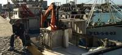
El ministro de Agricultura, Alimentación y Medio Ambiente, Miguel Arias Cañete, ha reclamado este lunes que la reforma de la política pesquera común (PPC) que los 27 han de negociar este año mantenga "por lo menos por un largo periodo transitorio" las ayudas al desguace y otros apoyos a la reestructuración de la flota que Bruselas quiere eliminar porque las ve ineficaces.
"Consideramos que hay que hacer esfuerzos adicionales para que se pueda seguir financiando los desguaces y las paradas temporales, por lo menos por un largo periodo transitorio", ha dicho el ministro a la prensa en Bruselas, a su llegada a la reunión de ministros de Pesca de la UE que se celebra este lunes para abordar la reforma de la PPC y sus presupuestos.
La comisaria de Pesca, Maria Damanaki, ha propuesto crear un fondo que aúne todos los instrumentos existentes en el marco de las políticas pesquera y marítima y que cuente con unos 6.500 millones de euros para el periodo 2014-2020.
Se trata de una cifra que "España puede apoyar", ha dicho Cañete, pero incluyendo "esfuerzos adicionales" para no eliminar totalmente los apoyos a la reestructuración de la flota.
Los titulares de Pesca de los 27 debaten este lunes la dotación propuesta por Damanaki para el próximo periodo (que también se negociará este año y medio próximo dentro de los presupuestos generales de la UE), pero también tratarán sobre otras medidas que plantea Bruselas para la reforma de la PPC como son la prohibición de los descartes (pesca accesoria que después es devuelta al mar).
Damanaki defiende vetar los descartes, pero en opinión de España "hay que atacar las causas que obligan" a los pescadores a desperdiciar pescados antes de fijar los objetivos para combatirlo.
Cañete ha explicado que las acciones contra los descartes han de diseñarse "teniendo en cuenta el tratamiento de las distintas flotas, multipesquerías, caladeros" a efectos de esta práctica que se quiere eliminar.
"Dimensión exterior"
Otro elemento de la reforma de la PPC que ocupa a los ministros este lunes es la "dimensión exterior" de esta política, en cuanto a cómo definir las relaciones comerciales de la UE con países terceros.
Los 27 tienen previsto adoptar en esta reunión un texto general sobre esta cuestión que España "apoya", según ha dicho Arias Cañete, porque "favorece los intereses de la flota española", que está desplegada en aguas internacionales y caladeros de terceros países con "más de 250 unidades y más de 470 en el marco de las sociedades mixtas", según cuentas del ministro.
En este sentido, Arias Cañete ha adelantado que aprovechará la reunión en Bruselas para "instar" a la comisaria Damanaki a que "agilice las negociaciones" para un nuevo acuerdo pesquero con Marruecos, después de que la Eurocámara vetara el anterior el pasado diciembre.
2012-03-19T12:22:17Z
El rey hace un llamamiento a la "responsabilidad política" para que España salga de la crisis
El rey hace un llamamiento a la "responsabilidad política" para que España salga de la crisis
EFE
Invita a reeditar "el espíritu de concorcia" de las Cortes de Cádiz para superar las "serias dificultades" que atraviesa el país en la actualidad.
Don Juan Carlos, perteneciente a la Casa de Borbón como Fernando VII, presidió la conmemoración oficial del bicentenario de la Constitución de 1812.
Los Reyes y el Gobierno en pleno celebran en Cádiz el aniversario de 'La Pepa'.
El rey animó este lunes a reeditar el "espíritu de concordia", la "responsabilidad política" y el "compromiso cívico" de las Cortes de Cádiz para afrontar las "serias dificultades" que atraviesa España y "seguir avanzando" a favor de "la unidad, la libertad y el bienestar de todos los españoles".En la intervención con que ha clausurado la conmemoración oficial del bicentenario de la Constitución de Cádiz en el Oratorio de San Felipe Neri, el mismo lugar donde fue proclamada el 19 de marzo de 1812, don Juan Carlos invitó a seguir el ejemplo de aquel momento histórico, cuando, "ante la adversidad, el pueblo español supo aportar lo mejor de sí mismo y transformar una realidad difícil en una fecunda tarea".La "generosidad" de los constituyentesLos reyes presidieron esta solemne ceremonia, a la que han asistido unos trescientos invitados, entre ellos el Gobierno casi al completo, encabezado por Mariano Rajoy, y los presidentes del Congreso y del Senado, al frente de una delegación de más de sesenta parlamentarios, así como los máximos representantes del poder judicial y varios presidentes autonómicos.Tras destacar la importancia de la Constitución de 1812 como "referente esencial de la unidad, la soberanía y la libertad" de los españoles, que "benefició a España, a Iberoamérica y también al resto de Europa", el jefe del Estado valoró el comportamiento de "una nación que estuvo muy por encima de sus máximas autoridades y que destacó por su dignidad, su heroísmo y su generosidad"."Es justo reconocer a quienes, en medio de grandes dificultades, afrontaron la responsabilidad política y culminaron una formidable empresa de superación nacional", reflexionó el rey, quien ha resaltado la tarea colectiva con la que los españoles forjaron el actual Estado de derecho en torno a la Constitución de 1978, "con firme espíritu de concordia, solidaridad y unidad"."En la labor de Cádiz, realizada en un difícil trance histórico, podemos encontrar la referencia y la inspiración necesaria para afrontar las serias dificultades por las que nuestro país atraviesa en la actualidad", recalcó a continuación.En sus palabras, don Juan Carlos también puso el énfasis en la dimensión y vocación iberoamericana de la primera Carta Magna española, un "referente clave y de gran influencia" para los nuevos Estados independientes de América, y animó a potenciar la cooperación entre los países que integran esta comunidad de naciones, porque "redundará en una mayor prosperidad para todos".Don Juan Carlos elogió así la Carta Magna que el rey Fernando VII, antecesor suyo y también perteneciente a la dinastía borbónica, derogó los dos años de su promulgación, el 4 de mayo de 1814, para restaurar al absolutismo tras la expulsión del ejército francés de Napoleón Bonaparte.
EFE
- Invita a reeditar "el espíritu de concorcia" de las Cortes de Cádiz para superar las "serias dificultades" que atraviesa el país en la actualidad.
- Don Juan Carlos, perteneciente a la Casa de Borbón como Fernando VII, presidió la conmemoración oficial del bicentenario de la Constitución de 1812.
- Los Reyes y el Gobierno en pleno celebran en Cádiz el aniversario de 'La Pepa'.
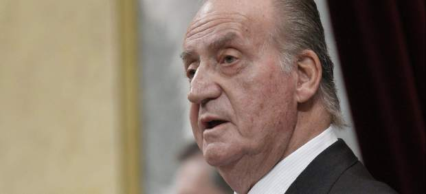
El rey animó este lunes a reeditar el "espíritu de concordia", la "responsabilidad política" y el "compromiso cívico" de las Cortes de Cádiz para afrontar las "serias dificultades" que atraviesa España y "seguir avanzando" a favor de "la unidad, la libertad y el bienestar de todos los españoles".
En la intervención con que ha clausurado la conmemoración oficial del bicentenario de la Constitución de Cádiz en el Oratorio de San Felipe Neri, el mismo lugar donde fue proclamada el 19 de marzo de 1812, don Juan Carlos invitó a seguir el ejemplo de aquel momento histórico, cuando, "ante la adversidad, el pueblo español supo aportar lo mejor de sí mismo y transformar una realidad difícil en una fecunda tarea".
La "generosidad" de los constituyentes
Los reyes presidieron esta solemne ceremonia, a la que han asistido unos trescientos invitados, entre ellos el Gobierno casi al completo, encabezado por Mariano Rajoy, y los presidentes del Congreso y del Senado, al frente de una delegación de más de sesenta parlamentarios, así como los máximos representantes del poder judicial y varios presidentes autonómicos.
Tras destacar la importancia de la Constitución de 1812 como "referente esencial de la unidad, la soberanía y la libertad" de los españoles, que "benefició a España, a Iberoamérica y también al resto de Europa", el jefe del Estado valoró el comportamiento de "una nación que estuvo muy por encima de sus máximas autoridades y que destacó por su dignidad, su heroísmo y su generosidad".
"Es justo reconocer a quienes, en medio de grandes dificultades, afrontaron la responsabilidad política y culminaron una formidable empresa de superación nacional", reflexionó el rey, quien ha resaltado la tarea colectiva con la que los españoles forjaron el actual Estado de derecho en torno a la Constitución de 1978, "con firme espíritu de concordia, solidaridad y unidad".
"En la labor de Cádiz, realizada en un difícil trance histórico, podemos encontrar la referencia y la inspiración necesaria para afrontar las serias dificultades por las que nuestro país atraviesa en la actualidad", recalcó a continuación.
En sus palabras, don Juan Carlos también puso el énfasis en la dimensión y vocación iberoamericana de la primera Carta Magna española, un "referente clave y de gran influencia" para los nuevos Estados independientes de América, y animó a potenciar la cooperación entre los países que integran esta comunidad de naciones, porque "redundará en una mayor prosperidad para todos".
Don Juan Carlos elogió así la Carta Magna que el rey Fernando VII, antecesor suyo y también perteneciente a la dinastía borbónica, derogó los dos años de su promulgación, el 4 de mayo de 1814, para restaurar al absolutismo tras la expulsión del ejército francés de Napoleón Bonaparte.
2012-03-19T10:04:36Z
El Ministerio del Interior reduce un 55% los escoltas privados en Euskadi y Navarra
El Ministerio del Interior reduce un 55% los escoltas privados en Euskadi y Navarra
EFE
A partir de este martes pasarán de ser 789 a 364.
La Asociación de Escoltas en Activo asegura que ese colectivo profesional se encuentra en "vías de desaparición".
El Ministerio del Interior reducirá desde este martes en un 55% el número de escoltas privados que tiene contratados en Euskadi y Navarra para proteger a personas amenazadas por ETA. La reducción se traducirá en que los concejales que llevaban servicio de protección asignado por el ministerio pasarán de dos escoltas por persona a uno, según ha informado la Asociación de Escoltas en Activo del País Vasco y Navarra. Según esta asociación, las empresas que prestan este servicio de escoltas privados han despedido en los últimos días a 425 escoltas, al reducir a partir de mañana de 789 a 364 los escoltas dependientes del Gobierno central. Se trata del primer recorte en los escoltas dependientes del ministerio y se produce cinco meses después de que el pasado 20 de octubre ETA anunciara el cese definitivo de su actividad terrorista. Fuentes del ministerio han confirmadola reducción de escoltas a partir del martes y han explicado que han ofrecido a las empresas en las que prestan sus servicios estos escoltas -a partir de mañana en paro- trabajar en la seguridad exterior de los centros penitenciarios de toda España para colaborar en las tareas de vigilancia propias de la Policía Nacional y Guardia Civil. El Gobierno Vasco, que también paga parte del servicio de escoltas, ya bajó a la mitad el 1 de septiembre pasado las escoltas de los cargos públicos elegidos en las últimas elecciones locales de hace un año. Además, se suprimió la protección de quienes dejaron de ser ediles tras esas elecciones, con excepciones. En los siguientes meses la reducción continuó: en el Gobierno Vasco ya solo llevan escolta el lehendakari y los consejeros, y el 14 de febrero pasado dejaron de tener escolta la mayor parte de los jueces y fiscales que ejercen en Euskadi. Sólo quedan escoltados los altos cargos como el presidente o el fiscal del Tribunal Superior de Justicia. El presidente de la Asociación de Escoltas en Activo del País Vasco y Navarra, Santiago Fontela, ha considerado que el recorte aplicado por el Ministerio del Interior es un "duro golpe" para un colectivo profesional que se encuentra en "vías de desaparición". "En ningún país del mundo se ha dejado en la cuneta a quienes han puesto sus vidas al servicio de la democracia y la libertad. Lamentablemente -ha añadido- España parece que será pionera también en esto".
EFE
- A partir de este martes pasarán de ser 789 a 364.
- La Asociación de Escoltas en Activo asegura que ese colectivo profesional se encuentra en "vías de desaparición".
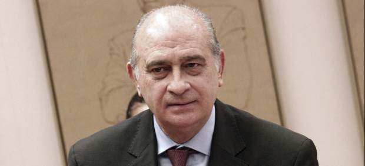
El Ministerio del Interior reducirá desde este martes en un 55% el número de escoltas privados que tiene contratados en Euskadi y Navarra para proteger a personas amenazadas por ETA.
La reducción se traducirá en que los concejales que llevaban servicio de protección asignado por el ministerio pasarán de dos escoltas por persona a uno, según ha informado la Asociación de Escoltas en Activo del País Vasco y Navarra.
Según esta asociación, las empresas que prestan este servicio de escoltas privados han despedido en los últimos días a 425 escoltas, al reducir a partir de mañana de 789 a 364 los escoltas dependientes del Gobierno central.
Se trata del primer recorte en los escoltas dependientes del ministerio y se produce cinco meses después de que el pasado 20 de octubre ETA anunciara el cese definitivo de su actividad terrorista.
Fuentes del ministerio han confirmadola reducción de escoltas a partir del martes y han explicado que han ofrecido a las empresas en las que prestan sus servicios estos escoltas -a partir de mañana en paro- trabajar en la seguridad exterior de los centros penitenciarios de toda España para colaborar en las tareas de vigilancia propias de la Policía Nacional y Guardia Civil.
El Gobierno Vasco, que también paga parte del servicio de escoltas, ya bajó a la mitad el 1 de septiembre pasado las escoltas de los cargos públicos elegidos en las últimas elecciones locales de hace un año. Además, se suprimió la protección de quienes dejaron de ser ediles tras esas elecciones, con excepciones.
En los siguientes meses la reducción continuó: en el Gobierno Vasco ya solo llevan escolta el lehendakari y los consejeros, y el 14 de febrero pasado dejaron de tener escolta la mayor parte de los jueces y fiscales que ejercen en Euskadi. Sólo quedan escoltados los altos cargos como el presidente o el fiscal del Tribunal Superior de Justicia.
El presidente de la Asociación de Escoltas en Activo del País Vasco y Navarra, Santiago Fontela, ha considerado que el recorte aplicado por el Ministerio del Interior es un "duro golpe" para un colectivo profesional que se encuentra en "vías de desaparición".
"En ningún país del mundo se ha dejado en la cuneta a quienes han puesto sus vidas al servicio de la democracia y la libertad. Lamentablemente -ha añadido- España parece que será pionera también en esto".
2012-03-19T07:00:40Z
La crisis dispara las protestas y ya deja una media de 60 al día
La crisis dispara las protestas y ya deja una media de 60 al día
20MINUTOS
Un 36% más de manifestaciones que hace 5 años.
Solo la Comunidad Valenciana vivió 942 movilizaciones en enero y febrero.
Los expertos señalan al 15-M como clave del aumento.
El 29 de marzo, huelga general contra la reforma laboral.
La crisis se ha colado en las calles españolas convirtiéndolas en espejo de la frustración. El resultado, un país en el que de media se convocan alrededor de 60 protestas diarias.El último balance del Estado (datos de 2010) y los datos recabados por 20 minutos de las distintas delegaciones y subdelegaciones del Gobierno demuestran que, desde el comienzo de la crisis 2008, el número de convocatorias no deja de crecer, y 2012 va camino de convertirse en un año récord.Para hacernos una idea de la evolución, el último informe que recoge las reuniones y manifestaciones celebradas en España data de 2010 y cifra en 19.336 los expedientes de ese año, un 36% más de movilizaciones que antes de la crisis (2007). Esta radiografía incluye las protestas comunicadas, no comunicadas, prohibidas, con cambios de itinerario... el termómetro del descontento social.Desde 2010 y hasta hoy, un año 2011 marcado por el 15-M indignado, que se echó a las calles movilizando a centenares de miles de personas, con jornadas donde llegaron a convocarse hasta 80 protestas en España. Unos datos que, en opinión de los expertos, mantendrán la tendencia alcista de los últimos años, con 2.000 movilizaciones más al año.Con nuevos invitados entrando en escena: las redes sociales "consiguieron ser un catalizador del descontento desde mayo de 2010 (el tijeretazo anunciado por Zapatero: recorte a funcionarios, suspensión del cheque-bebé...)", explica Jaime Pastor, profesor de Ciencia Política de la UNED."Hartazgo"Más o menos numerosas, con quejas de diferente temática, pero una demostración de que crisis y hartazgo van de la mano en los últimos cuatro años. En las últimas movilizaciones, los recortes están detrás de la mayoría de las convocatorias. Y el espíritu del 15-M sobrevuela. "Inició un ciclo rebelde. Había una pérdida de credibilidad en las viejas organizaciones, especialmente entre los jóvenes. No se puede entender la marea verde (en defensa de la enseñanza pública), por ejemplo, sin el 15-M", explica Pastor.En lo que va de 2012, y según datos provisionales de las diferentes delegaciones y subdelegaciones del Gobierno del país, las cifras apuntan a récord. En la Comunitat Valenciana, castigada especialmente por la corrupción política, los dos primeros meses del año dejaron 942 manifestaciones, 5 veces más que las que se produjeron el mismo periodo en 2011 (184). Solo en Barcelona, 308 hasta el pasado 5 de marzo, según datos del departamento de Interior de la Generalitat.Ciudades con menos población también demuestran su nivel de descontento con cifras significativas. Córdoba, por ejemplo, lleva 91; Granada, 99; Valladolid, 169... Protestas que movilizan a miles de manifestantes. Una figura que, en 2011, año de la primavera árabe y de indignados españoles, fue personaje del año para la revista Time.El grado de éxito¿Y ahora? Dependerá de muchos factores el tirón que puedan seguir teniendo las movilizaciones en España. Entre ellos, el grado de éxito, "lo que se consiga", y también de la posible represión que sufra. Y ahí señalan a Valencia y las cargas policiales como una acción que puede traer consigo el efecto contrario al que pretendían, es decir, en lugar de aplacar y debilitar las movilizaciones, fortalecerlas.El próximo 29 de marzo se celebrará la que para los sindicatos pretende ser la gran cita, en lo que va de año, en cuanto a movilizaciones: la huelga general. A partir de ahí, aunque es difícil de prever, se presume un periodo "bastante intenso, al menos hasta verano" en cuanto a protestas, según Jaime Pastor. El experto en movimientos sociales recuerda que el 15-M está organizando una protesta global para el próximo 12 de mayo.Encierros, acampadas...Huelgas y manifestaciones van acompañadas de un aumento de métodos más drásticos. Frente al activismo concentrado en el tiempo y en el espacio que representan las manifestaciones, las acampadas y los encierros conjugan la ocupación permanente del espacio público con la visibilidad mediática prolongada en el tiempo.Junto a formas de protesta colectivas, hay otras puramente individuales. Aunque en ocasiones también ocupen el espacio público, es más habitual que estos indignados solitarios opten por acciones llamativas (carreras solidarias o desnudos públicos) o decisiones arriesgadas (huelgas de hambre y amenazas de quemarse a lo bonzo).Leire Sainz Ezquerra, por ejemplo trabaja desde hace 11 años, subcontratada por diferentes empresas, en el servicio de atención al cliente de Iberdrola en Güeñes (Vizcaya).Lleva una semana en huelga de hambre. Su sueldo, 800 euros, apenas le da para ir tirando. "Una huelga tradicional no servía para nada, Iberdrola subcontrataba a otra empresa y cubría nuestros puestos", dice."Desconcertada y muy cansada", no pierde la esperanza de que con esta huelga de hambre, junto a otra compañera, sus problemas cobren protagonismo público: desde diciembre de 2010, 70 empleados, la mayoría mujeres, han sido despedidos; y, desde marzo, en aplicación de la reforma laboral, otros 11 se han quedado sin trabajo por estar de baja por enfermedad (justificada).
20MINUTOS
- Un 36% más de manifestaciones que hace 5 años.
- Solo la Comunidad Valenciana vivió 942 movilizaciones en enero y febrero.
- Los expertos señalan al 15-M como clave del aumento.
- El 29 de marzo, huelga general contra la reforma laboral.
La crisis se ha colado en las calles españolas convirtiéndolas en espejo de la frustración. El resultado, un país en el que de media se convocan alrededor de 60 protestas diarias.
El último balance del Estado (datos de 2010) y los datos recabados por 20 minutos de las distintas delegaciones y subdelegaciones del Gobierno demuestran que, desde el comienzo de la crisis 2008, el número de convocatorias no deja de crecer, y 2012 va camino de convertirse en un año récord.
Para hacernos una idea de la evolución, el último informe que recoge las reuniones y manifestaciones celebradas en España data de 2010 y cifra en 19.336 los expedientes de ese año, un 36% más de movilizaciones que antes de la crisis (2007). Esta radiografía incluye las protestas comunicadas, no comunicadas, prohibidas, con cambios de itinerario... el termómetro del descontento social.
Desde 2010 y hasta hoy, un año 2011 marcado por el 15-M indignado, que se echó a las calles movilizando a centenares de miles de personas, con jornadas donde llegaron a convocarse hasta 80 protestas en España. Unos datos que, en opinión de los expertos, mantendrán la tendencia alcista de los últimos años, con 2.000 movilizaciones más al año.
Con nuevos invitados entrando en escena: las redes sociales "consiguieron ser un catalizador del descontento desde mayo de 2010 (el tijeretazo anunciado por Zapatero: recorte a funcionarios, suspensión del cheque-bebé...)", explica Jaime Pastor, profesor de Ciencia Política de la UNED.
"Hartazgo"
Más o menos numerosas, con quejas de diferente temática, pero una demostración de que crisis y hartazgo van de la mano en los últimos cuatro años. En las últimas movilizaciones, los recortes están detrás de la mayoría de las convocatorias. Y el espíritu del 15-M sobrevuela. "Inició un ciclo rebelde. Había una pérdida de credibilidad en las viejas organizaciones, especialmente entre los jóvenes. No se puede entender la marea verde (en defensa de la enseñanza pública), por ejemplo, sin el 15-M", explica Pastor.
En lo que va de 2012, y según datos provisionales de las diferentes delegaciones y subdelegaciones del Gobierno del país, las cifras apuntan a récord. En la Comunitat Valenciana, castigada especialmente por la corrupción política, los dos primeros meses del año dejaron 942 manifestaciones, 5 veces más que las que se produjeron el mismo periodo en 2011 (184). Solo en Barcelona, 308 hasta el pasado 5 de marzo, según datos del departamento de Interior de la Generalitat.
Ciudades con menos población también demuestran su nivel de descontento con cifras significativas. Córdoba, por ejemplo, lleva 91; Granada, 99; Valladolid, 169... Protestas que movilizan a miles de manifestantes. Una figura que, en 2011, año de la primavera árabe y de indignados españoles, fue personaje del año para la revista Time.
El grado de éxito
¿Y ahora? Dependerá de muchos factores el tirón que puedan seguir teniendo las movilizaciones en España. Entre ellos, el grado de éxito, "lo que se consiga", y también de la posible represión que sufra. Y ahí señalan a Valencia y las cargas policiales como una acción que puede traer consigo el efecto contrario al que pretendían, es decir, en lugar de aplacar y debilitar las movilizaciones, fortalecerlas.
El próximo 29 de marzo se celebrará la que para los sindicatos pretende ser la gran cita, en lo que va de año, en cuanto a movilizaciones: la huelga general. A partir de ahí, aunque es difícil de prever, se presume un periodo "bastante intenso, al menos hasta verano" en cuanto a protestas, según Jaime Pastor. El experto en movimientos sociales recuerda que el 15-M está organizando una protesta global para el próximo 12 de mayo.
Encierros, acampadas...
Huelgas y manifestaciones van acompañadas de un aumento de métodos más drásticos. Frente al activismo concentrado en el tiempo y en el espacio que representan las manifestaciones, las acampadas y los encierros conjugan la ocupación permanente del espacio público con la visibilidad mediática prolongada en el tiempo.
Junto a formas de protesta colectivas, hay otras puramente individuales. Aunque en ocasiones también ocupen el espacio público, es más habitual que estos indignados solitarios opten por acciones llamativas (carreras solidarias o desnudos públicos) o decisiones arriesgadas (huelgas de hambre y amenazas de quemarse a lo bonzo).
Leire Sainz Ezquerra, por ejemplo trabaja desde hace 11 años, subcontratada por diferentes empresas, en el servicio de atención al cliente de Iberdrola en Güeñes (Vizcaya).
Lleva una semana en huelga de hambre. Su sueldo, 800 euros, apenas le da para ir tirando. "Una huelga tradicional no servía para nada, Iberdrola subcontrataba a otra empresa y cubría nuestros puestos", dice.
"Desconcertada y muy cansada", no pierde la esperanza de que con esta huelga de hambre, junto a otra compañera, sus problemas cobren protagonismo público: desde diciembre de 2010, 70 empleados, la mayoría mujeres, han sido despedidos; y, desde marzo, en aplicación de la reforma laboral, otros 11 se han quedado sin trabajo por estar de baja por enfermedad (justificada).
2012-03-18T22:11:46Z
Rajoy dice que "pronto" llegarán tiempos mejores y Rubalcaba pide no votar "la mentira" del PP
Rajoy dice que "pronto" llegarán tiempos mejores y Rubalcaba pide no votar "la mentira" del PP
EFE
Los líderes de PP y PSOE han hecho campaña en Andalucía a una semana de los comicios autonómicos.
Rajoy insiste en justificar la necesidad y efectividad a medio plazo de sus medidas contra la crisis.
Rubalcaba ha remarcado la diferencia entre el proyecto socialista basado en los derechos sociales.
Andalucía celebra elecciones el próximo domingo 25 de marzo.
Los líderes del PSOE y del PP se han sumado este fin de semana a la campaña por las elecciones andaluzas para dar un impulso a las candidaturas de su partido. El presidente del Gobierno, Mariano Rajoy se ha mostrado confiado en que el PP de Javier Arenas va a resultar ganador en los comicios del próximo domingo de marzo gracias a las medidas que el Ejecutivo está adoptando para atajar los efectos de la crisis económica.El secretario general del PSOE, Alfredo Pérez Rubalcaba, ha querido remarcar la diferencias entre el proyecto de los socialistas liderado por José Antonio Griñán que se basa en la protección de los derechos sociales como la sanidad, la educación y la dependencia, frente a la política de recortes del PP.Medidas que no gustan pero necesariasEl presidente del Gobierno, Mariano Rajoy, ha afirmado este domingo que España vive un momento de "dificultades" y de "transición hacia un tiempo nuevo", pero ha asegurado que "pronto" llegarán al país tiempos mejores. Rajoy se ha expresado en estos términos durante un mitin electoral del PP celebrado en Cádiz para apoyar al candidato de su partido a la Presidencia de la Junta de Andalucía, Javier Arenas. El jefe del Ejecutivo ha dicho que su Gobierno seguirá realizando las reformas necesarias y ha avisado de que estas no producirán efecto "en media hora". Rajoy ha considerado que tiene "gracia" que aquellos que no hicieron estas reformas cuando gobernaban pidan que su Ejecutivo resuelva la situación actual en "24 horas", algo que "no es posible", aunque ya se están poniendo las bases para que empiecen "a dar sus frutos".Ha defendido las medidas puestas en marcha hasta ahora como la subida del IRPF, en la que se ha intentado ser "justo y equitativo" incrementando los impuestos a los que tienen más ingresos, ha dicho. En este sentido, el presidente ha comentado que hacer reformas es difícil y tomar decisiones a veces es "complicado" porque no le gustan a mucha gente. "No hemos salido de la crisis", ha añadido el presidente del Gobierno, que ha mostrado su confianza en que se superará la actual situación, tanto en España como en Andalucía, con "esfuerzo y trabajo". El Gobierno que lleva casi noventa días de trabajo, ha continuado Rajoy, ha hecho las reformas de "verdad" y "pendientes" que asentarán las bases del futuro.El jefe del Ejecutivo ha recordado otras medidas aprobadas como la ley de estabilidad presupuestaria (para que las administraciones públicas no vuelvan a gastar más de 90.000 millones de euros de lo que ingresaron en 2011), la reforma laboral, la reestructuración del sector financiero y el plan de racionalización de las empresas públicas y el plan de pago de 35.000 millones puesto en marcha para el pago de proveedores en los ayuntamientos y autonomías. En cuanto al proyecto andaluz del Partido Popular, Rajoy ha reiterado que no se puede vivir en un país donde la mitad de los jóvenes que quieren trabajar no pueden hacerlo y se ha mostrado convencido de que se puede resolver esta situación. Se ha mostrado convencido de que el próximo domingo 25 de marzo el PP ganará los comicios en Andalucía, una comunidad que, a su juicio, necesita un cambio y un Gobierno como el central "mire al futuro" y haga reformas para no quedarse atrás. Rajoy ha recordado que mañana se celebrará el bicentenario de la Constitución de 1812 y, acto seguido, ha manifestado que hay que hacer reformas como hicieron las Cortes de Cádiz. Cada reforma que se hace, ha proseguido el presidente, es un "avance" para el país, al que le queda un "tiempo difícil" por delante, pero del que se saldrá. Rajoy ha querido apoyar a Arenas en este mitin, a una semana de los comicios andaluces, junto con la vicepresidenta y portavoz del Gobierno, Soraya Sáenz de Santamaría, y los ministros de Hacienda y Administraciones Públicas y de Empleo y Seguridad Social, Cristóbal Montoro y Fátima Báñez, respectivamente.PSOE y PP, dos proyectos "distintos"Por su parte, el secretario general del PSOE, Alfredo Pérez Rubalcaba, ha recurrido al copago sanitario y a la reforma laboral para arremeter contra el presidente del Gobierno. Ha criticado a Rajoy por decir que no está a favor del copago o de la subida de impuestos y le ha ha pedido que "deje de hacer esas cosas que a los que no les gusta es a los españoles".Rubalcaba ha dicho en un acto de apoyo al PSOE de Jaén que al Partido Popular "lo único que le interesa es completar el mapa de gaviotas con manchas azules en Andalucía". En estas elecciones están en juego dos proyectos, "un proyecto para Andalucía, el del presidente Griñán, y otro proyecto para alcanzar el poder en Andalucía, que es lo único que le interesa al Partido Popular", ha apuntado.En su opinión, la propuesta de Gobierno de los socialistas andaluces es "distinta" de la de Javier Arenas porque no pretenden "rebajar los profesores de las escuelas, sino rebajar el fracaso escolar", tampoco aspiran a "recortar los quirófanos, sino recortar las listas de espera" ni a "acabar con la dependencia, sino proteger más"."No queremos terminar con la solidaridad, sino con la codicia que nos ha traído hasta aquí", ha afirmado y ha añadido que en los comicios del domingo 25 de marzo "se vota quién gestiona la salida de la crisis, con qué criterios políticos y quién gestiona las dificultades".El dirigente socialista ha manifestado que "se vota si salimos juntos todos o algunos quedan atrás para mucho tiempo", y ha reiterado que se votan "dos proyectos políticos distintos, dos personas distintas".Rubalcaba ha solicitado "votar no a la mentira" del PP por decir que no iba a subir los impuestos, que no abarataría el despido y por "haber mentido a los pensionistas". Ha reivindicado "con orgullo" el hecho de que el PSOE lleve 30 años gobernando en Andalucía con la "confianza" del "pueblo andaluz", tras lo que se ha preguntado "qué hubiera hecho la derecha si hubiera gobernado 30 años en Andalucía".Ha precisado que Arenas es "igual" que el resto de los presidentes de Comunidades Autónomas gobernadas por el PP, y ha criticado la política de recortes que lleva a cabo el PP. El secretario general del PSOE ha aprovechado el acto para criticar al presidente del Gobierno, Mariano Rajoy,Ha criticado la reforma laboral que, en su opinión, "colma las expectativas de la clase empresarial más reaccionaria" y ha añadido que la misma no está hecha para la crisis, ya que es una "reforma ideológica, que va a crear más desempleo y más incertidumbre sobre la incertidumbre, es la ideología de la derecha que quiere cargarse el modelo de relaciones laborales".
EFE
- Los líderes de PP y PSOE han hecho campaña en Andalucía a una semana de los comicios autonómicos.
- Rajoy insiste en justificar la necesidad y efectividad a medio plazo de sus medidas contra la crisis.
- Rubalcaba ha remarcado la diferencia entre el proyecto socialista basado en los derechos sociales.
- Andalucía celebra elecciones el próximo domingo 25 de marzo.
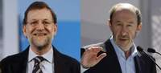
Los líderes del PSOE y del PP se han sumado este fin de semana a la campaña por las elecciones andaluzas para dar un impulso a las candidaturas de su partido. El presidente del Gobierno, Mariano Rajoy se ha mostrado confiado en que el PP de Javier Arenas va a resultar ganador en los comicios del próximo domingo de marzo gracias a las medidas que el Ejecutivo está adoptando para atajar los efectos de la crisis económica.
El secretario general del PSOE, Alfredo Pérez Rubalcaba, ha querido remarcar la diferencias entre el proyecto de los socialistas liderado por José Antonio Griñán que se basa en la protección de los derechos sociales como la sanidad, la educación y la dependencia, frente a la política de recortes del PP.
Medidas que no gustan pero necesarias
El presidente del Gobierno, Mariano Rajoy, ha afirmado este domingo que España vive un momento de "dificultades" y de "transición hacia un tiempo nuevo", pero ha asegurado que "pronto" llegarán al país tiempos mejores. Rajoy se ha expresado en estos términos durante un mitin electoral del PP celebrado en Cádiz para apoyar al candidato de su partido a la Presidencia de la Junta de Andalucía, Javier Arenas.
El jefe del Ejecutivo ha dicho que su Gobierno seguirá realizando las reformas necesarias y ha avisado de que estas no producirán efecto "en media hora". Rajoy ha considerado que tiene "gracia" que aquellos que no hicieron estas reformas cuando gobernaban pidan que su Ejecutivo resuelva la situación actual en "24 horas", algo que "no es posible", aunque ya se están poniendo las bases para que empiecen "a dar sus frutos".
Ha defendido las medidas puestas en marcha hasta ahora como la subida del IRPF, en la que se ha intentado ser "justo y equitativo" incrementando los impuestos a los que tienen más ingresos, ha dicho. En este sentido, el presidente ha comentado que hacer reformas es difícil y tomar decisiones a veces es "complicado" porque no le gustan a mucha gente.
"No hemos salido de la crisis", ha añadido el presidente del Gobierno, que ha mostrado su confianza en que se superará la actual situación, tanto en España como en Andalucía, con "esfuerzo y trabajo". El Gobierno que lleva casi noventa días de trabajo, ha continuado Rajoy, ha hecho las reformas de "verdad" y "pendientes" que asentarán las bases del futuro.
El jefe del Ejecutivo ha recordado otras medidas aprobadas como la ley de estabilidad presupuestaria (para que las administraciones públicas no vuelvan a gastar más de 90.000 millones de euros de lo que ingresaron en 2011), la reforma laboral, la reestructuración del sector financiero y el plan de racionalización de las empresas públicas y el plan de pago de 35.000 millones puesto en marcha para el pago de proveedores en los ayuntamientos y autonomías.
En cuanto al proyecto andaluz del Partido Popular, Rajoy ha reiterado que no se puede vivir en un país donde la mitad de los jóvenes que quieren trabajar no pueden hacerlo y se ha mostrado convencido de que se puede resolver esta situación.
Se ha mostrado convencido de que el próximo domingo 25 de marzo el PP ganará los comicios en Andalucía, una comunidad que, a su juicio, necesita un cambio y un Gobierno como el central "mire al futuro" y haga reformas para no quedarse atrás.
Rajoy ha recordado que mañana se celebrará el bicentenario de la Constitución de 1812 y, acto seguido, ha manifestado que hay que hacer reformas como hicieron las Cortes de Cádiz. Cada reforma que se hace, ha proseguido el presidente, es un "avance" para el país, al que le queda un "tiempo difícil" por delante, pero del que se saldrá.
Rajoy ha querido apoyar a Arenas en este mitin, a una semana de los comicios andaluces, junto con la vicepresidenta y portavoz del Gobierno, Soraya Sáenz de Santamaría, y los ministros de Hacienda y Administraciones Públicas y de Empleo y Seguridad Social, Cristóbal Montoro y Fátima Báñez, respectivamente.
PSOE y PP, dos proyectos "distintos"
Por su parte, el secretario general del PSOE, Alfredo Pérez Rubalcaba, ha recurrido al copago sanitario y a la reforma laboral para arremeter contra el presidente del Gobierno. Ha criticado a Rajoy por decir que no está a favor del copago o de la subida de impuestos y le ha ha pedido que "deje de hacer esas cosas que a los que no les gusta es a los españoles".
Rubalcaba ha dicho en un acto de apoyo al PSOE de Jaén que al Partido Popular "lo único que le interesa es completar el mapa de gaviotas con manchas azules en Andalucía". En estas elecciones están en juego dos proyectos, "un proyecto para Andalucía, el del presidente Griñán, y otro proyecto para alcanzar el poder en Andalucía, que es lo único que le interesa al Partido Popular", ha apuntado.
En su opinión, la propuesta de Gobierno de los socialistas andaluces es "distinta" de la de Javier Arenas porque no pretenden "rebajar los profesores de las escuelas, sino rebajar el fracaso escolar", tampoco aspiran a "recortar los quirófanos, sino recortar las listas de espera" ni a "acabar con la dependencia, sino proteger más".
"No queremos terminar con la solidaridad, sino con la codicia que nos ha traído hasta aquí", ha afirmado y ha añadido que en los comicios del domingo 25 de marzo "se vota quién gestiona la salida de la crisis, con qué criterios políticos y quién gestiona las dificultades".
El dirigente socialista ha manifestado que "se vota si salimos juntos todos o algunos quedan atrás para mucho tiempo", y ha reiterado que se votan "dos proyectos políticos distintos, dos personas distintas".
Rubalcaba ha solicitado "votar no a la mentira" del PP por decir que no iba a subir los impuestos, que no abarataría el despido y por "haber mentido a los pensionistas". Ha reivindicado "con orgullo" el hecho de que el PSOE lleve 30 años gobernando en Andalucía con la "confianza" del "pueblo andaluz", tras lo que se ha preguntado "qué hubiera hecho la derecha si hubiera gobernado 30 años en Andalucía".
Ha precisado que Arenas es "igual" que el resto de los presidentes de Comunidades Autónomas gobernadas por el PP, y ha criticado la política de recortes que lleva a cabo el PP. El secretario general del PSOE ha aprovechado el acto para criticar al presidente del Gobierno, Mariano Rajoy,
Ha criticado la reforma laboral que, en su opinión, "colma las expectativas de la clase empresarial más reaccionaria" y ha añadido que la misma no está hecha para la crisis, ya que es una "reforma ideológica, que va a crear más desempleo y más incertidumbre sobre la incertidumbre, es la ideología de la derecha que quiere cargarse el modelo de relaciones laborales".
2012-03-18T19:34:01Z
La semana comienza con lluvias en el norte y bajada generalizada de temperaturas
La semana comienza con lluvias en el norte y bajada generalizada de temperaturas
EUROPA PRESS
Se prevén precipitaciones en la mitad norte peninsular, según la Aemet.
Madrid y Guadalajara permanecerán en alerta amarilla por bajas temperaturas y podrían registrarse los -8ºC (en la montaña).
Baja la cota de nieve y hay alerta amarilla por este fenómeno en Cantabria, León, Palencia, Barcelona, Girona, Lleida y Asturias.
Consulta la previsión del tiempo en tu localidad | Blog de Emilio Rey.
La semana empieza con un nuevo descenso término que dejará en alerta a siete provincias por nieve y dos por bajas temperaturas, y se prevén precipitaciones en la mitad norte peninsular, según la Agencia Estatal de Meteorología (Aemet).En concreto, este lunes se ha activado la alerta amarilla por nieve en Cantabria, León, Palencia, Barcelona, Girona, Lleida y Asturias donde podría acumularse hasta 5 centímetros en algunos puntos. Además, la bajada de temperaturas (de hasta 6 grados) será pronunciada en la zona del levante, donde también se prevé que la lluvia siga al menos hasta el miércoles.La cota de nieve baja en este inicio de semana y hay que situarla entre los 600 metros y los 900 metros en el tercio norte peninsular y sistema Ibérico, y entre los 900 metros y los 1.800 metros en el resto del este de la Península.Asimismo, Madrid y Guadalajara serán las únicas provincias que permanecerán en alerta amarilla por bajas temperaturas donde podrían registrar los ochos grados negativos (en zonas de montaña) durante este inicio de semana.En general, bajarán ligeramente las temperaturas tanto en la península como en Baleares y Canarias. Además, se prevé la formación de heladas débiles o localmente moderas en muchas zonas de la mitad norte peninsular.Lluvias en el norte y este de la penínsulaMientras en el Cantábrico, alto Ebro y Pirineos predominarán los cielos muy nubosos este lunes con posibilidad de precipitaciones.Las lluvias también se extenderán al noreste de Cataluña y Baleares donde se prevén que vengan acompañadas de tormentas.En el resto permanecerán los cielos poco nubosos o despejados, con aumento de la nubosidad a lo largo de este lunes en su mitad este, con chubascos débiles y dispersos en al área mediterránea.Fuerte oleaje en CanariasCanarias registrará intervalos nubosos en el norte de las islas occidentales del archipiélago, mientras en el resto recibirán la semana con cielos poco nubosos.También, este lunes estarán en alerta amarilla por fuerte oleaje el archipiélago canario, en concreto las islas de El Hierro, La Gomera, Lanzarote, Tenerife y La Palma.Por último, los vientos soplarán de moderado a fuerte en el noreste de Girona, y de componente noroeste en el litoral sureste de la península y Canarias. En el resto del territorio nacional y Baleares soplarán de flojo a moderado los vientos de componente norte.
EUROPA PRESS
- Se prevén precipitaciones en la mitad norte peninsular, según la Aemet.
- Madrid y Guadalajara permanecerán en alerta amarilla por bajas temperaturas y podrían registrarse los -8ºC (en la montaña).
- Baja la cota de nieve y hay alerta amarilla por este fenómeno en Cantabria, León, Palencia, Barcelona, Girona, Lleida y Asturias.
- Consulta la previsión del tiempo en tu localidad | Blog de Emilio Rey.
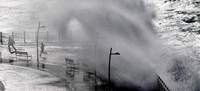
La semana empieza con un nuevo descenso término que dejará en alerta a siete provincias por nieve y dos por bajas temperaturas, y se prevén precipitaciones en la mitad norte peninsular, según la Agencia Estatal de Meteorología (Aemet).
En concreto, este lunes se ha activado la alerta amarilla por nieve en Cantabria, León, Palencia, Barcelona, Girona, Lleida y Asturias donde podría acumularse hasta 5 centímetros en algunos puntos. Además, la bajada de temperaturas (de hasta 6 grados) será pronunciada en la zona del levante, donde también se prevé que la lluvia siga al menos hasta el miércoles.
La cota de nieve baja en este inicio de semana y hay que situarla entre los 600 metros y los 900 metros en el tercio norte peninsular y sistema Ibérico, y entre los 900 metros y los 1.800 metros en el resto del este de la Península.
Asimismo, Madrid y Guadalajara serán las únicas provincias que permanecerán en alerta amarilla por bajas temperaturas donde podrían registrar los ochos grados negativos (en zonas de montaña) durante este inicio de semana.
En general, bajarán ligeramente las temperaturas tanto en la península como en Baleares y Canarias. Además, se prevé la formación de heladas débiles o localmente moderas en muchas zonas de la mitad norte peninsular.
Lluvias en el norte y este de la península
Mientras en el Cantábrico, alto Ebro y Pirineos predominarán los cielos muy nubosos este lunes con posibilidad de precipitaciones.
Las lluvias también se extenderán al noreste de Cataluña y Baleares donde se prevén que vengan acompañadas de tormentas.
En el resto permanecerán los cielos poco nubosos o despejados, con aumento de la nubosidad a lo largo de este lunes en su mitad este, con chubascos débiles y dispersos en al área mediterránea.
Fuerte oleaje en Canarias
Canarias registrará intervalos nubosos en el norte de las islas occidentales del archipiélago, mientras en el resto recibirán la semana con cielos poco nubosos.
También, este lunes estarán en alerta amarilla por fuerte oleaje el archipiélago canario, en concreto las islas de El Hierro, La Gomera, Lanzarote, Tenerife y La Palma.
Por último, los vientos soplarán de moderado a fuerte en el noreste de Girona, y de componente noroeste en el litoral sureste de la península y Canarias. En el resto del territorio nacional y Baleares soplarán de flojo a moderado los vientos de componente norte.
2012-03-18T16:53:38Z
'La Pepa', una Constitución para la felicidad... ¿de todos?
'La Pepa', una Constitución para la felicidad... ¿de todos?
EFE / VÍDEO: ATLAS
Este lunes se cumplen 200 años de la promulgación de la Constitución de 1812.
La Carta Magna estableció derechos y libertados hasta entonces desconocidos para todos los españoles.
Algunos de sus principios siguen vigentes hoy pero otros han quedado desfasados.
Los preceptos de 'La Pepa' quedaron en el olvido con el regreso a España de Fernando VII.
"El objeto del Gobierno es la felicidad de la nación", "el amor a la Patria es una de las principales obligaciones de todos los españoles", "la religión de la nación española es y será perpetuamente la católica, apostólica y romana, única verdadera". Son algunas de las afirmaciones recogidas en los primeros artículos de la Constitución española de 1812 que ahora cumple 200 años y que supuso un punto y aparte en la historia de España.Fue un logro y un hito en favor de los derechos y libertades, aunque hoy en día parece difícil entender sentencias como las anteriores o que se elevaran a rango constitucional aspectos como la exclusión de la mujer en la participación política.Un repaso de los 384 artículos del texto normativo conocido popularmente como La Pepa, por que fue aprobada un 19 de marzo, día de San José, permite constatar también el vuelco que ha dado España y los 'recortes' territoriales que ha sufrido en dos centurias.Menos naciónLos historiadores coinciden en considerar al texto de 1812 como el germen del concepto de la nación española, una nación que 200 años después se ha dejado por el camino lo que le quedaba de aquel país en el que se decía que no se ponía el sol. El artículo 1 de la primera Constitución especificaba que la nación española era la reunión de todos los españoles de ambos hemisferios, y el 10 detallaba que junto a la Península, España estaba formada por las Baleares, "las Canarias con las demás posesiones de África" y muchos territorios bastante más lejanos que después lograron su independencia."En la América septentrional, Nueva España, con la Nueva Galicia y Península de Yucatán, Guatemala, provincias internas de Oriente, provincias internas de Occidente, isla de Cuba con las dos Floridas, la parte española de la isla de Santo Domingo, y la isla de Puerto Rico con las demás adyacentes a éstas y al continente en uno y otro mar.En la América meridional, la Nueva Granada, Venezuela, el Perú, Chile, provincias del Río de la Plata, y todas las islas adyacentes en el mar Pacífico y en el Atlántico. En el Asia, las islas Filipinas, y las que dependen de su gobierno". Esos eran los dominios 200 años atrás. ¿Y todos los que vivían en ellos tenían la condición de español?Lo aclaraba el artículo 5: son españoles todos los hombres libres nacidos y avecindados en esos territorios y sus hijos, los extranjeros que hayan obtenido de las Cortes cartas de naturaleza, los que sin ella lleven diez años de vecindad y los libertos desde que adquieran la libertad en "las Españas".Españoles justos, benéficos, católicos... y contribuyentesA todos se les reconocían derechos y se les fijaba obligaciones, como la que les exigía el amor a la Patria y, al mismo tiempo, "ser justos y benéficos" y contribuir en proporción de sus haberes para los gastos del Estado.La calidad de ciudadano se perdía, entre otros motivos, por admitir empleo de un Gobierno extranjero o por residir fuera de España cinco años consecutivos sin permiso.Quedaban en suspenso los derechos de ciudadanía por "no tener empleo, oficio o modo de vivir conocido", por ser deudor a los caudales públicos, por hallarse procesado criminalmente o por ser sirviente doméstico.No había opción a una religión distinta a la católica, ya que ésta se consideraba que sería perpetuamente la que tendría España y prohibía, en su artículo 12, el ejercicio de cualquier otra.Ni mujeres, ni jóvenesNo había aún sufragio universal, y los representantes en las Cortes se elegían de forma indirecta (renovándose en su totalidad cada dos años) mediante las que se denominaban juntas electorales de parroquia, de partido y de provincia.Las mujeres no podían ser diputadas y ni siquiera participar en el proceso de elección de los representantes en las Cortes, que debían tener, al menos, veinticinco años, según especificaba el artículo 91.Y se exigía que para aspirar a ese puesto debían tener "una renta anual proporcionada", aunque la propia Constitución suspendía ese artículo hasta que más adelante se concretasen los detalles de esa renta. Nunca se hizo.Hoy sería inconcebible que sólo hubiera sesiones en el Congreso cuatro meses al año, los primeros compases del parlamentarismo español fijaron ese tiempo como máximo anual, ya que la Constitución recogía que lo habitual es que fueran tres meses a partir del 1 de marzo. El mes extra sería a petición del Rey o por acuerdo de las dos terceras partes de los diputados.Lejos estaban las polémicas por la fórmula utilizada para asumir el cargo de diputado. "¿Juráis defender y conservar la religión católica, apostólica, romana, sin admitir otra alguna en el Reino? ¿Juráis guardar y hacer guardar religiosamente la Constitución política de la Monarquía española, sancionada por las Cortes generales y extraordinarias de la Nación en el año de 1812? ¿Juráis haberos bien y fielmente en el cargo que la nación os ha encomendado, mirando en todo por el bien y prosperidad de la misma nación?" Esas eran las preguntas, y la respuesta sólo podía ser una: " Sí, juro". Para lo del "imperativo legal" aún faltaba mucho tiempo.Contra el poder absolutoCon los antecedentes que había, los constituyentes sembraron el texto de una serie de prevenciones para limitar el poder del Rey, y, así, impidieron una imagen ahora totalmente familiar: los ministros (que eran nombrados por el Monarca) no podían ser diputados.También se impedía a las Cortes deliberar en presencia del rey, y el monarca no podía "bajo ningún pretexto (artículo 172) disolverlas y, si viajaba al extranjero o pretendía casarse, debía tener consentimiento previo de los diputados, ya que, de no ser así, se entendía que abdicaba.La Constitución preveía que eran las Cortes las que tenían que señalar la dotación anual de la casa del rey a cuenta de la tesorería nacional, así como la específica para el Príncipe de Asturias desde su nacimiento y para los infantes e infantas desde que cumplieran siete años.Las Cortes se reservaron también prerrogativas como proteger la libertad política de imprenta, y los constituyentes quisieron dar un paso decisivo hacia la alfabetización. Así, el artículo 366 recogía que "en todos los pueblos de la Monarquía se establecerán escuelas de primeras letras, en las que se enseñará a los niños a leer, escribir y contar, y el catecismo de la religión católica, que comprenderá también una breve exposición de las obligaciones civiles".Asimismo, estipulaba la creación del número competente de Universidades y de otros establecimientos de instrucción que se juzguen convenientes para la enseñanza de todas las ciencias, literatura y bellas artes. La pretensión era que no hubiera discriminaciones territoriales: "El plan general de enseñanza será uniforme en todo el Reino, debiendo explicarse la Constitución política de la Monarquía en todas las Universidades y establecimientos literarios donde se enseñen las ciencias eclesiásticas y políticas".Son retazos llamativos de lo que quiso alumbrar aquella primera Constitución española y cuyos preceptos quedaron arrinconados años más tarde tras el regreso a España de Fernando VII. Pero la semilla quedó plantada.
EFE / VÍDEO: ATLAS
- Este lunes se cumplen 200 años de la promulgación de la Constitución de 1812.
- La Carta Magna estableció derechos y libertados hasta entonces desconocidos para todos los españoles.
- Algunos de sus principios siguen vigentes hoy pero otros han quedado desfasados.
- Los preceptos de 'La Pepa' quedaron en el olvido con el regreso a España de Fernando VII.
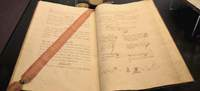
"El objeto del Gobierno es la felicidad de la nación", "el amor a la Patria es una de las principales obligaciones de todos los españoles", "la religión de la nación española es y será perpetuamente la católica, apostólica y romana, única verdadera". Son algunas de las afirmaciones recogidas en los primeros artículos de la Constitución española de 1812 que ahora cumple 200 años y que supuso un punto y aparte en la historia de España.
Fue un logro y un hito en favor de los derechos y libertades, aunque hoy en día parece difícil entender sentencias como las anteriores o que se elevaran a rango constitucional aspectos como la exclusión de la mujer en la participación política.
Un repaso de los 384 artículos del texto normativo conocido popularmente como La Pepa, por que fue aprobada un 19 de marzo, día de San José, permite constatar también el vuelco que ha dado España y los 'recortes' territoriales que ha sufrido en dos centurias.
Menos nación
Los historiadores coinciden en considerar al texto de 1812 como el germen del concepto de la nación española, una nación que 200 años después se ha dejado por el camino lo que le quedaba de aquel país en el que se decía que no se ponía el sol.
El artículo 1 de la primera Constitución especificaba que la nación española era la reunión de todos los españoles de ambos hemisferios, y el 10 detallaba que junto a la Península, España estaba formada por las Baleares, "las Canarias con las demás posesiones de África" y muchos territorios bastante más lejanos que después lograron su independencia.
"En la América septentrional, Nueva España, con la Nueva Galicia y Península de Yucatán, Guatemala, provincias internas de Oriente, provincias internas de Occidente, isla de Cuba con las dos Floridas, la parte española de la isla de Santo Domingo, y la isla de Puerto Rico con las demás adyacentes a éstas y al continente en uno y otro mar.
En la América meridional, la Nueva Granada, Venezuela, el Perú, Chile, provincias del Río de la Plata, y todas las islas adyacentes en el mar Pacífico y en el Atlántico. En el Asia, las islas Filipinas, y las que dependen de su gobierno". Esos eran los dominios 200 años atrás. ¿Y todos los que vivían en ellos tenían la condición de español?
Lo aclaraba el artículo 5: son españoles todos los hombres libres nacidos y avecindados en esos territorios y sus hijos, los extranjeros que hayan obtenido de las Cortes cartas de naturaleza, los que sin ella lleven diez años de vecindad y los libertos desde que adquieran la libertad en "las Españas".
Españoles justos, benéficos, católicos... y contribuyentes
A todos se les reconocían derechos y se les fijaba obligaciones, como la que les exigía el amor a la Patria y, al mismo tiempo, "ser justos y benéficos" y contribuir en proporción de sus haberes para los gastos del Estado.
La calidad de ciudadano se perdía, entre otros motivos, por admitir empleo de un Gobierno extranjero o por residir fuera de España cinco años consecutivos sin permiso.
Quedaban en suspenso los derechos de ciudadanía por "no tener empleo, oficio o modo de vivir conocido", por ser deudor a los caudales públicos, por hallarse procesado criminalmente o por ser sirviente doméstico.
No había opción a una religión distinta a la católica, ya que ésta se consideraba que sería perpetuamente la que tendría España y prohibía, en su artículo 12, el ejercicio de cualquier otra.
Ni mujeres, ni jóvenes
No había aún sufragio universal, y los representantes en las Cortes se elegían de forma indirecta (renovándose en su totalidad cada dos años) mediante las que se denominaban juntas electorales de parroquia, de partido y de provincia.
Las mujeres no podían ser diputadas y ni siquiera participar en el proceso de elección de los representantes en las Cortes, que debían tener, al menos, veinticinco años, según especificaba el artículo 91.
Y se exigía que para aspirar a ese puesto debían tener "una renta anual proporcionada", aunque la propia Constitución suspendía ese artículo hasta que más adelante se concretasen los detalles de esa renta. Nunca se hizo.
Hoy sería inconcebible que sólo hubiera sesiones en el Congreso cuatro meses al año, los primeros compases del parlamentarismo español fijaron ese tiempo como máximo anual, ya que la Constitución recogía que lo habitual es que fueran tres meses a partir del 1 de marzo. El mes extra sería a petición del Rey o por acuerdo de las dos terceras partes de los diputados.
Lejos estaban las polémicas por la fórmula utilizada para asumir el cargo de diputado. "¿Juráis defender y conservar la religión católica, apostólica, romana, sin admitir otra alguna en el Reino? ¿Juráis guardar y hacer guardar religiosamente la Constitución política de la Monarquía española, sancionada por las Cortes generales y extraordinarias de la Nación en el año de 1812? ¿Juráis haberos bien y fielmente en el cargo que la nación os ha encomendado, mirando en todo por el bien y prosperidad de la misma nación?" Esas eran las preguntas, y la respuesta sólo podía ser una: " Sí, juro". Para lo del "imperativo legal" aún faltaba mucho tiempo.
Contra el poder absoluto
Con los antecedentes que había, los constituyentes sembraron el texto de una serie de prevenciones para limitar el poder del Rey, y, así, impidieron una imagen ahora totalmente familiar: los ministros (que eran nombrados por el Monarca) no podían ser diputados.
También se impedía a las Cortes deliberar en presencia del rey, y el monarca no podía "bajo ningún pretexto (artículo 172) disolverlas y, si viajaba al extranjero o pretendía casarse, debía tener consentimiento previo de los diputados, ya que, de no ser así, se entendía que abdicaba.
La Constitución preveía que eran las Cortes las que tenían que señalar la dotación anual de la casa del rey a cuenta de la tesorería nacional, así como la específica para el Príncipe de Asturias desde su nacimiento y para los infantes e infantas desde que cumplieran siete años.
Las Cortes se reservaron también prerrogativas como proteger la libertad política de imprenta, y los constituyentes quisieron dar un paso decisivo hacia la alfabetización. Así, el artículo 366 recogía que "en todos los pueblos de la Monarquía se establecerán escuelas de primeras letras, en las que se enseñará a los niños a leer, escribir y contar, y el catecismo de la religión católica, que comprenderá también una breve exposición de las obligaciones civiles".
Asimismo, estipulaba la creación del número competente de Universidades y de otros establecimientos de instrucción que se juzguen convenientes para la enseñanza de todas las ciencias, literatura y bellas artes. La pretensión era que no hubiera discriminaciones territoriales: "El plan general de enseñanza será uniforme en todo el Reino, debiendo explicarse la Constitución política de la Monarquía en todas las Universidades y establecimientos literarios donde se enseñen las ciencias eclesiásticas y políticas".
Son retazos llamativos de lo que quiso alumbrar aquella primera Constitución española y cuyos preceptos quedaron arrinconados años más tarde tras el regreso a España de Fernando VII. Pero la semilla quedó plantada.
2012-03-18T12:21:09Z
El Congreso y el Senado recortan sus presupuestos por tercer año consecutivo
El Congreso y el Senado recortan sus presupuestos por tercer año consecutivo
EFE
Las Cámaras aplicarán un 'tijeretazo' del 5,2% en el caso del Congreso y de un 2% en el del Senado.
También se recortarán las partidas al Defensor de Pueblo, el Tribunal de Cuentas y la Junta Electoral Central.
Diputados y senadores continuarán con sus sueldos congelados.
El Congreso y el Senado aprobarán la semana próxima un recorte en sus respectivos presupuestos por tercer año consecutivo, que afectará a gran parte de las partidas de ambas Cámaras, así como a las del Defensor del Pueblo, Tribunal de Cuentas y Junta Electoral Central, que dependen de las Cortes Generales.Las cifras del ajuste se concretarán en la reunión que las Mesas conjuntas del Congreso y el Senado celebrarán el próximo martes en la Cámara Alta, las cuales se incorporarán posteriormente al proyecto de ley de Presupuestos Generales del Estado para 2012 que el Gobierno aprobará el 30 de marzo.Fuentes parlamentarias de la Cámara Baja han cifrado en un 5,2% el 'tijeretazo' presupuestario en el Congreso, mientras que en el Senado el recorte previsto inicialmente sería del 2%, han apuntado fuentes de esta institución.Protocolo, viajes, subvenciones a los grupos parlamentarios son algunos de los capítulos afectados por el ajuste, en tanto que las retribuciones de diputados y senadores continuarán congeladas.La primera contención del sueldo de los parlamentarios data de 2009 y se mantuvo en 2010, pero en los presupuestos del año pasado, en consonancia con el ajuste en el sector público decidido por el Gobierno del PSOE, sus salarios bajaron un 10%, de manera que la congelación se hará en función de esta última cifra.En concreto, el "sueldo base" de cada diputado o senador continúa en 2.813 euros brutos al mes, a los que suman 1.823 euros para los de fuera de Madrid y 870 euros para los electos por la capital, así como otros complementos según sus funciones en la Cámara.Eso sí, solo en aportaciones a los planes de pensiones de las que que hasta el año pasado disfrutaban los parlamentarios, las Cámaras se van a ahorrar casi 2,5 millones de euros.La decisión de suprimir este capítulo, que suponía un gasto de unos 4.000 euros al año por cada diputado o senador, ya había sido adoptada en una reunión de las Mesas conjuntas celebrada a finales del pasado mes de enero y ahora se plasmará en los presupuestos.Menos delegaciones internacionalesOtra medida que también va a comportar ahorro es la disminución del número de delegaciones internacionales de diputados y senadores. Solo se van a mantener aquellas a las que España está comprometida por acuerdos internacionales, esto es: la del Consejo Europeo, la de la OTAN, OSCE, Unión Interparlamentaria y Unión Mediterránea.El procedimiento para determinar estas cuentas consiste en sendas reuniones separadas de las Mesas del Congreso y el Senado, en las cuales se aprueban los presupuestos de cada una de las Cámaras, para después en las Mesas conjuntas añadir los correspondientes de Cortes Generales.Se trata de las partidas que permiten sufragar las publicaciones conjuntas, viajes de delegaciones parlamentarias, las visitas institucionales o los sueldos de funcionarios de las Cortes Generales, y las relativas al Defensor del Pueblo, Tribunal de Cuentas y Junta Electoral Central.En 2011, con una bajada del 6,46%, la cuantía de Cortes Generales fue de 200.712.293 euros, mientras que el Congreso afrontó el ejercicio con 91.710.442 euros (el 6,61% menos) y el Senado con 55.143.210 euros, esto es, una rebaja del 6,7%.
EFE
- Las Cámaras aplicarán un 'tijeretazo' del 5,2% en el caso del Congreso y de un 2% en el del Senado.
- También se recortarán las partidas al Defensor de Pueblo, el Tribunal de Cuentas y la Junta Electoral Central.
- Diputados y senadores continuarán con sus sueldos congelados.
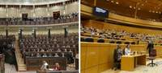
El Congreso y el Senado aprobarán la semana próxima un recorte en sus respectivos presupuestos por tercer año consecutivo, que afectará a gran parte de las partidas de ambas Cámaras, así como a las del Defensor del Pueblo, Tribunal de Cuentas y Junta Electoral Central, que dependen de las Cortes Generales.
Las cifras del ajuste se concretarán en la reunión que las Mesas conjuntas del Congreso y el Senado celebrarán el próximo martes en la Cámara Alta, las cuales se incorporarán posteriormente al proyecto de ley de Presupuestos Generales del Estado para 2012 que el Gobierno aprobará el 30 de marzo.
Fuentes parlamentarias de la Cámara Baja han cifrado en un 5,2% el 'tijeretazo' presupuestario en el Congreso, mientras que en el Senado el recorte previsto inicialmente sería del 2%, han apuntado fuentes de esta institución.
Protocolo, viajes, subvenciones a los grupos parlamentarios son algunos de los capítulos afectados por el ajuste, en tanto que las retribuciones de diputados y senadores continuarán congeladas.
La primera contención del sueldo de los parlamentarios data de 2009 y se mantuvo en 2010, pero en los presupuestos del año pasado, en consonancia con el ajuste en el sector público decidido por el Gobierno del PSOE, sus salarios bajaron un 10%, de manera que la congelación se hará en función de esta última cifra.
En concreto, el "sueldo base" de cada diputado o senador continúa en 2.813 euros brutos al mes, a los que suman 1.823 euros para los de fuera de Madrid y 870 euros para los electos por la capital, así como otros complementos según sus funciones en la Cámara.
Eso sí, solo en aportaciones a los planes de pensiones de las que que hasta el año pasado disfrutaban los parlamentarios, las Cámaras se van a ahorrar casi 2,5 millones de euros.
La decisión de suprimir este capítulo, que suponía un gasto de unos 4.000 euros al año por cada diputado o senador, ya había sido adoptada en una reunión de las Mesas conjuntas celebrada a finales del pasado mes de enero y ahora se plasmará en los presupuestos.
Menos delegaciones internacionales
Otra medida que también va a comportar ahorro es la disminución del número de delegaciones internacionales de diputados y senadores. Solo se van a mantener aquellas a las que España está comprometida por acuerdos internacionales, esto es: la del Consejo Europeo, la de la OTAN, OSCE, Unión Interparlamentaria y Unión Mediterránea.
El procedimiento para determinar estas cuentas consiste en sendas reuniones separadas de las Mesas del Congreso y el Senado, en las cuales se aprueban los presupuestos de cada una de las Cámaras, para después en las Mesas conjuntas añadir los correspondientes de Cortes Generales.
Se trata de las partidas que permiten sufragar las publicaciones conjuntas, viajes de delegaciones parlamentarias, las visitas institucionales o los sueldos de funcionarios de las Cortes Generales, y las relativas al Defensor del Pueblo, Tribunal de Cuentas y Junta Electoral Central.
En 2011, con una bajada del 6,46%, la cuantía de Cortes Generales fue de 200.712.293 euros, mientras que el Congreso afrontó el ejercicio con 91.710.442 euros (el 6,61% menos) y el Senado con 55.143.210 euros, esto es, una rebaja del 6,7%.
2012-03-17T23:42:56Z
Paco Valladares, el actor que prestó su voz perfecta a los más grandes del cine y la televisión
Paco Valladares, el actor que prestó su voz perfecta a los más grandes del cine y la televisión
EFE
Muere Paco Valladares a los 76 años por la complicación de una neumonía.
Estaba orgulloso de participar en conciertos sinfónicos, cuentan sus allegados.
Interpretó la voz doblada al español de estrellas de Hollywood como Robert Redford o Clint Eastwood.
Sus amigos más íntimos aseguran que lo que más le gustaba era cantar.
El actor Francisco Valladares, fallecido este sábado en Madrid a los 76 años a consecuencia de la leucemia que padecía desde hace cuatro, era el galán de la dicción perfecta que prestó su voz a grandes como Robert Redford y, sobre todo, fue "el compañero del alma" de poetas como Miguel Hernández, a los que sublimó.Con una voz que salía de unos "adentros" con los que nació y con una formación y un gusto por los clásicos que tuvo desde muy joven, el sevillano trabajó en más de sesenta títulos, entre teatro, cine y televisión, en los que siempre puso en evidencia su talante y buen humor. Algo que le "salvó" de "tantas y tantas" cosas como le pasaron en su vida, según él mismo contaba.Valladares quiso recuperar en 2010 una obra que había interpretado en los años 70 y en 1989: Trampa mortal. Quería quitarse una "terrible obsesión".La última vez que había hecho Trampa mortal había trabajado con un joven actor, Arsenio León, que enfermó de leucemia y al que él iba a ver cada día al hospital Gregorio Marañón, donde le trataban.El muchacho, al que él consideraba como el hijo que no tuvo, murió. Y después, en 2008, Valladares, que ya había sufrido un infarto en 1998, enfermó de leucemia y le dieron la misma habitación."Veía su cara y tenía que hacerla para quitarme eso de encima. Estaba en el hospital, con la 'quimio', y supe que la haría. Fue terrible pero hay que superarlo", rememoraba el actor."Aconsejo a quienes tienen cáncer que eviten la depresión. Hay que tomárselo bien y reivindico la palabra cáncer, evito 'enfermedad', porque no es contagioso ni nada, es tuya y muy tuya, y nadie se muere ni un día antes ni después de cuando tenga que morirse", decía en una entrevista el pasado mes de febrero.El cáncer, por su nombreEste "excelente" y "leal" amigo, con un sentido del humor "muy inglés", según sus amigos más íntimos como la actriz Concha Velasco, la periodista María Teresa Campos y el director teatral Ángel Fernández Montesinos, hizo su última obra este verano en el Español, Las de Caín, y estuvo "feliz como un niño" haciendo una de las cosas que más le gustaban: cantar.El actor, Hijo Predilecto de Sevilla, estudió declamación y comenzó su carrera artística con 14 años haciendo teatro infantil y siguió en el Teatro Español Universitario (TEU) y en el cuadro de actores de Radio Nacional de España.Fue, desde 1956, uno los locutores "de cabecera" de TVE y "la voz" de actores como Richard Burton, Alain Delon, Clint Eastwood o Robert Redford.Pero él, según Fernández Montesinos, era "un actor completo, un humanista y un artista del Renacimiento", al que le gustaba declamar, pero también, "y mucho", cantar y actuar y, sobre todo, "resucitar" el verso de poetas como Federico García Lorca o Miguel Hernández, su "compañero del alma".Sin embargo, no fue eso lo que le hizo "inmensamente popular", sino la televisión, ya que hizo durante muchos años programas al lado de su "mujer", María Teresa Campos.Juan Carlos Pérez de la Fuente quiso contar con él para la obra Orquesta de señoritas, que acaba de estrenarse en Santander, pero fue imposible porque el oncólogo le había aconsejado hacía tres meses que estuviera "disponible" para las revisiones que tenía que pasar.Una de las cosas de las que más orgulloso estaba era de su participación en conciertos sinfónicos porque, decía, era "algo irreal", como si se transportara.Hizo Edipo Rey, con la Orquesta de RTVE dirigido "nada menos" que por Ros Marbá, pero se acordaba especialmente del primero, el que hizo en el Palacio de la Música dirigido por Hans von Benda, junto a Irene Gutiérrez Caba.Hace dos años, Valladares, que completó 2.500 representaciones de Por la calle de Alcalá y 2.300 de Mamá quiero ser artista, editó una colección de discos recitando a grandes clásicos, como Miguel Hernández o Rafael de León, aunque ya había publicado años antes Versos de la tierra, con Manuel Dicenta y Nuria Espert.
EFE
- Muere Paco Valladares a los 76 años por la complicación de una neumonía.
- Estaba orgulloso de participar en conciertos sinfónicos, cuentan sus allegados.
- Interpretó la voz doblada al español de estrellas de Hollywood como Robert Redford o Clint Eastwood.
- Sus amigos más íntimos aseguran que lo que más le gustaba era cantar.
El actor Francisco Valladares, fallecido este sábado en Madrid a los 76 años a consecuencia de la leucemia que padecía desde hace cuatro, era el galán de la dicción perfecta que prestó su voz a grandes como Robert Redford y, sobre todo, fue "el compañero del alma" de poetas como Miguel Hernández, a los que sublimó.
Con una voz que salía de unos "adentros" con los que nació y con una formación y un gusto por los clásicos que tuvo desde muy joven, el sevillano trabajó en más de sesenta títulos, entre teatro, cine y televisión, en los que siempre puso en evidencia su talante y buen humor. Algo que le "salvó" de "tantas y tantas" cosas como le pasaron en su vida, según él mismo contaba.
Valladares quiso recuperar en 2010 una obra que había interpretado en los años 70 y en 1989: Trampa mortal. Quería quitarse una "terrible obsesión".
La última vez que había hecho Trampa mortal había trabajado con un joven actor, Arsenio León, que enfermó de leucemia y al que él iba a ver cada día al hospital Gregorio Marañón, donde le trataban.
El muchacho, al que él consideraba como el hijo que no tuvo, murió. Y después, en 2008, Valladares, que ya había sufrido un infarto en 1998, enfermó de leucemia y le dieron la misma habitación.
"Veía su cara y tenía que hacerla para quitarme eso de encima. Estaba en el hospital, con la 'quimio', y supe que la haría. Fue terrible pero hay que superarlo", rememoraba el actor.
"Aconsejo a quienes tienen cáncer que eviten la depresión. Hay que tomárselo bien y reivindico la palabra cáncer, evito 'enfermedad', porque no es contagioso ni nada, es tuya y muy tuya, y nadie se muere ni un día antes ni después de cuando tenga que morirse", decía en una entrevista el pasado mes de febrero.
El cáncer, por su nombre
Este "excelente" y "leal" amigo, con un sentido del humor "muy inglés", según sus amigos más íntimos como la actriz Concha Velasco, la periodista María Teresa Campos y el director teatral Ángel Fernández Montesinos, hizo su última obra este verano en el Español, Las de Caín, y estuvo "feliz como un niño" haciendo una de las cosas que más le gustaban: cantar.
El actor, Hijo Predilecto de Sevilla, estudió declamación y comenzó su carrera artística con 14 años haciendo teatro infantil y siguió en el Teatro Español Universitario (TEU) y en el cuadro de actores de Radio Nacional de España.
Fue, desde 1956, uno los locutores "de cabecera" de TVE y "la voz" de actores como Richard Burton, Alain Delon, Clint Eastwood o Robert Redford.
Pero él, según Fernández Montesinos, era "un actor completo, un humanista y un artista del Renacimiento", al que le gustaba declamar, pero también, "y mucho", cantar y actuar y, sobre todo, "resucitar" el verso de poetas como Federico García Lorca o Miguel Hernández, su "compañero del alma".
Sin embargo, no fue eso lo que le hizo "inmensamente popular", sino la televisión, ya que hizo durante muchos años programas al lado de su "mujer", María Teresa Campos.
Juan Carlos Pérez de la Fuente quiso contar con él para la obra Orquesta de señoritas, que acaba de estrenarse en Santander, pero fue imposible porque el oncólogo le había aconsejado hacía tres meses que estuviera "disponible" para las revisiones que tenía que pasar.
Una de las cosas de las que más orgulloso estaba era de su participación en conciertos sinfónicos porque, decía, era "algo irreal", como si se transportara.
Hizo Edipo Rey, con la Orquesta de RTVE dirigido "nada menos" que por Ros Marbá, pero se acordaba especialmente del primero, el que hizo en el Palacio de la Música dirigido por Hans von Benda, junto a Irene Gutiérrez Caba.
Hace dos años, Valladares, que completó 2.500 representaciones de Por la calle de Alcalá y 2.300 de Mamá quiero ser artista, editó una colección de discos recitando a grandes clásicos, como Miguel Hernández o Rafael de León, aunque ya había publicado años antes Versos de la tierra, con Manuel Dicenta y Nuria Espert.
2012-03-17T16:34:11Z
Más de 177.000 proveedores se beneficiarán del plan de pago de la deuda municipal
Más de 177.000 proveedores se beneficiarán del plan de pago de la deuda municipal
EFE
Los municipios podrán acceder a una línea de crédito de hasta 35.000 millones, de los que recibirán unos 18.000 (el resto irá a para a las autonomías).
El 65% de los proveedores con facturas sin cobrar son pymes y autónomos.
La deuda de las comunidades autónomas creció un 17,3 % en 2011.
GRÁFICO: La deuda pública según comunidades autónomas.
Más de 177.070 proveedores se beneficiarán del pago de las facturas que los municipios tienen pendientes con ellos, según los datos del Ministerio de Hacienda y Administraciones Públicas. Es el balance provisional del plan de pago a proveedores puesto en marcha por el Gobierno, en el que se refleja que la mitad de los ayuntamientos de España se han acogido al programa de créditos para hacer frente a estas deudas.Son 4.622 las corporaciones locales que van a recurrir a la plan de pagos y que han presentado un total de 1.931.976 facturas pendientes de cobro por un importe de 9.584 millones. De los 177.070 proveedores, un 65% son pymes (63.543) y autónomos (50.259), según los datos de Hacienda.El Gobierno sostiene que se trata de una operación sin precedentes para inyectar liquidez a las empresas que, además, permitirá volver pronto a la senda de crecimiento y la creación de empleo. El Ejecutivo de Mariano Rajoy pondrá a disposición una línea de crédito de 35.000 millones de euros de los que hasta 18.000 millones de euros se destinarán a las entidades locales y el resto a las autonomías. Los proveedores tienen que acudir a los ayuntamientos que les adeudan para que les informen si están incluidos en la relación de facturas enviadas por las entidades locales, que están obligadas a atenderles.Los proveedores que no consten en la lista podrán solicitar a la entidad local deudora la emisión de un certificado individual, que tendrá que expedirse en un máximo de 15 días. Si pasado este plazo no hay respuesta, se entenderá reconocido el derecho de cobro por silencio positivo.Los ayuntamientos tendrán que comunicar en los cinco primeros días de abril y mayo los certificados rechazados y no contestados. Es decir, en abril y mayo habrá dos revisiones a estos datos que son, de momento, provisionales, tal y como recuerda Hacienda.Esta medida se verá complementada con un cambio en la legislación para que los proveedores que contraten con la Administración sean los primeros que dejen de pagar el IVA hasta que hayan cobrado la factura.
EFE
- Los municipios podrán acceder a una línea de crédito de hasta 35.000 millones, de los que recibirán unos 18.000 (el resto irá a para a las autonomías).
- El 65% de los proveedores con facturas sin cobrar son pymes y autónomos.
- La deuda de las comunidades autónomas creció un 17,3 % en 2011.
-
GRÁFICO: La deuda pública según comunidades autónomas.
Más de 177.070 proveedores se beneficiarán del pago de las facturas que los municipios tienen pendientes con ellos, según los datos del Ministerio de Hacienda y Administraciones Públicas. Es el balance provisional del plan de pago a proveedores puesto en marcha por el Gobierno, en el que se refleja que la mitad de los ayuntamientos de España se han acogido al programa de créditos para hacer frente a estas deudas.
Son 4.622 las corporaciones locales que van a recurrir a la plan de pagos y que han presentado un total de 1.931.976 facturas pendientes de cobro por un importe de 9.584 millones. De los 177.070 proveedores, un 65% son pymes (63.543) y autónomos (50.259), según los datos de Hacienda.
El Gobierno sostiene que se trata de una operación sin precedentes para inyectar liquidez a las empresas que, además, permitirá volver pronto a la senda de crecimiento y la creación de empleo. El Ejecutivo de Mariano Rajoy pondrá a disposición una línea de crédito de 35.000 millones de euros de los que hasta 18.000 millones de euros se destinarán a las entidades locales y el resto a las autonomías. Los proveedores tienen que acudir a los ayuntamientos que les adeudan para que les informen si están incluidos en la relación de facturas enviadas por las entidades locales, que están obligadas a atenderles.
Los proveedores que no consten en la lista podrán solicitar a la entidad local deudora la emisión de un certificado individual, que tendrá que expedirse en un máximo de 15 días. Si pasado este plazo no hay respuesta, se entenderá reconocido el derecho de cobro por silencio positivo.
Los ayuntamientos tendrán que comunicar en los cinco primeros días de abril y mayo los certificados rechazados y no contestados. Es decir, en abril y mayo habrá dos revisiones a estos datos que son, de momento, provisionales, tal y como recuerda Hacienda.
Esta medida se verá complementada con un cambio en la legislación para que los proveedores que contraten con la Administración sean los primeros que dejen de pagar el IVA hasta que hayan cobrado la factura.